<!doctype html>
<html lang="en">
<head>
  <meta charset="utf-8">
  <meta name="viewport" content="width=device-width, initial-scale=1">
  <title>arxiv digest — 2026-07-22</title>
  <style>
:root {
  --bg: #ffffff;
  --fg: #1f2328;
  --muted: #59636e;
  --border: #d0d7de;
  --card: #f6f8fa;
  --link: #0969da;
}
body {
  max-width: 980px;
  margin: 0 auto;
  padding: 2rem 1rem 5rem;
  font-family: -apple-system, BlinkMacSystemFont, "Segoe UI", Helvetica, Arial, sans-serif;
  line-height: 1.55;
  color: var(--fg);
  background: var(--bg);
}
a { color: var(--link); }
img { max-width: 100%; height: auto; }
pre, code { background: var(--card); border-radius: 6px; }
pre { padding: 1rem; overflow-x: auto; }
blockquote { border-left: 4px solid var(--border); padding-left: 1rem; color: var(--muted); }
details { margin: 0.6rem 0; }
summary { cursor: pointer; font-weight: 600; }
.paper-figures-scroll {
  display: flex;
  gap: 1rem;
  overflow-x: auto;
  overscroll-behavior-x: contain;
  padding: 0.75rem 0.25rem 1rem;
  margin: 1rem 0 1.25rem;
  border-top: 1px solid var(--border);
  border-bottom: 1px solid var(--border);
  scroll-snap-type: x proximity;
}
.paper-figure-card {
  flex: 0 0 min(260px, 72vw);
  scroll-snap-align: start;
  background: var(--card);
  border: 1px solid var(--border);
  border-radius: 12px;
  padding: 0.55rem;
}
.paper-figure-card img {
  display: block;
  width: 100%;
  max-height: 240px;
  object-fit: contain;
  background: white;
  border-radius: 8px;
}
.paper-figure-caption {
  display: block;
  margin-top: 0.5rem;
  color: var(--muted);
  font-size: 0.85rem;
}
.figure-strip-hint {
  color: var(--muted);
  font-size: 0.9rem;
  margin-bottom: -0.3rem;
}
</style>
  <!-- MathJax: renders $...$ inline math and $$...$$ display math, plus
       \(...\) and \[...\]. Loaded from the official CDN; works offline
       once cached. Configured to skip code/pre blocks so arxiv IDs that
       look like dollar amounts don't get mangled. -->
  <script>
    window.MathJax = {
      tex: {
        inlineMath: [['$', '$'], ['\\(', '\\)']],
        displayMath: [['$$', '$$'], ['\\[', '\\]']],
        processEscapes: true,
        processEnvironments: true
      },
      options: {
        skipHtmlTags: ['script', 'noscript', 'style', 'textarea', 'pre', 'code'],
        ignoreHtmlClass: 'tex2jax_ignore',
        processHtmlClass: 'tex2jax_process'
      }
    };
  </script>
  <script id="MathJax-script" async
    src="https://cdn.jsdelivr.net/npm/mathjax@3/es5/tex-chtml.js"></script>
</head>
<body>
<header style="background-color: #333; color: white; padding: 15px; margin-bottom: 20px;">
  <h1 style="margin: 0; font-size: 24px;">
    <a href="https://ochelpan.github.io/arXiv_clean/" style="color: white; text-decoration: none;">Main</a>
  </h1>
</header>

<h1>Daily arXiv Report</h1>

<hr>
<p>
<a href="index.html">← Index</a>
 · <a href="papers_04.html">← Previous</a> · <a href="papers_06.html">Next →</a>
</p>
<hr>

<h2>Papers 81–100</h2>
<p><a id="paper-2607.16544"></a></p>
<h3 id="aims-an-uncertainty-aware-ai-experimentalist-for-quantum-matter"><a href="http://arxiv.org/abs/2607.16544v1">AIMS: An uncertainty-aware AI experimentalist for quantum matter</a></h3>
<p><strong>Authors:</strong> Siyuan Qiu, Philip D. Suh, Nhat Huy Tran, Xirui Wang, Heonjoon Park, Kutay Akin, Kevin K. S. Multani, Seungwon Jung, Wenkai Cai, Xinyu Liu, Ziyan Zhu, Chunjing Jia, Zhantao Chen, Zhixun Shen, Zhurun Ji<br>
<strong>Type:</strong> both · <strong>Category:</strong> strongly correlated electrons · <strong>PDF:</strong> <a href="https://arxiv.org/pdf/2607.16544v1">https://arxiv.org/pdf/2607.16544v1</a><br>
<strong>Analysis basis:</strong> full PDF text, analyzed in chunks
<strong>Topic relevance:</strong> <code>analog quantum simulation</code> <strong>3/5</strong> · <code>methods for driven-dissipative</code> <strong>3/5</strong> · <code>quantum measurements</code> <strong>2/5</strong> · <code>Keldysh / 2PI / non-Gaussian methods</code> <strong>1/5</strong> · <code>driven-dissipative phase transition</code> <strong>1/5</strong></p>
<div class="figure-strip-hint">↔ Scroll figures horizontally</div>
<div class="paper-figures-scroll">
<figure class="paper-figure-card">
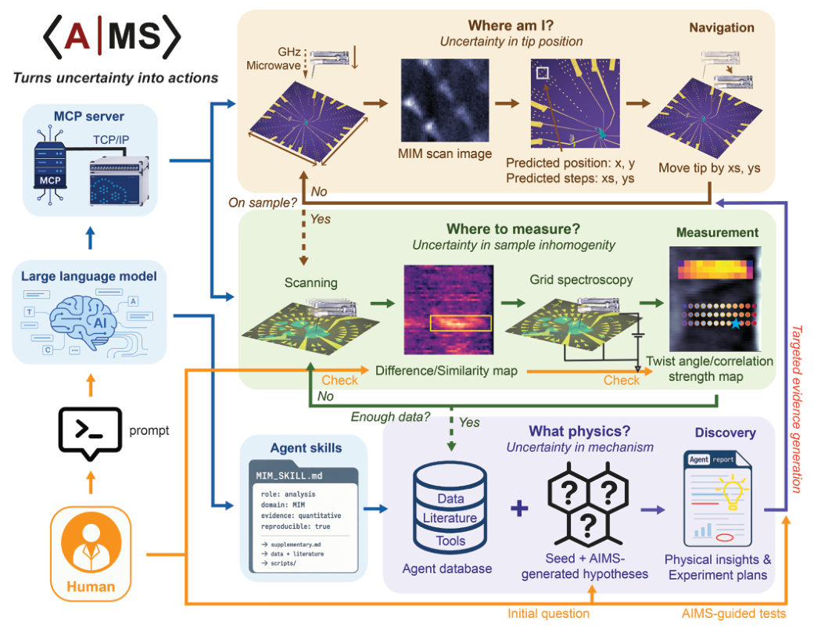
<figcaption class="paper-figure-caption"><b>Fig 1.</b> FIG. 1. AIMS turns three generic experimental uncertainties into action through three nested loops. AIMS converts uncertainty at three stages of a cryogenic MIM experiment into targeted actions. A human researcher initiates a task prompt through large language model interface, after which AIMS calls the requisite instrument control and real-time data analysis tools from the MCP server as each loop proceeds. In the navigation loop, it acquires MIM images, estimates the tip position and confidence, moves toward the sample, and invokes recovery procedures when localization is unreliable. In the measurement loop, large-area gate-dependent imaging and grid spectroscopy map sample inhomogeneity...</figcaption>
</figure>
<figure class="paper-figure-card">
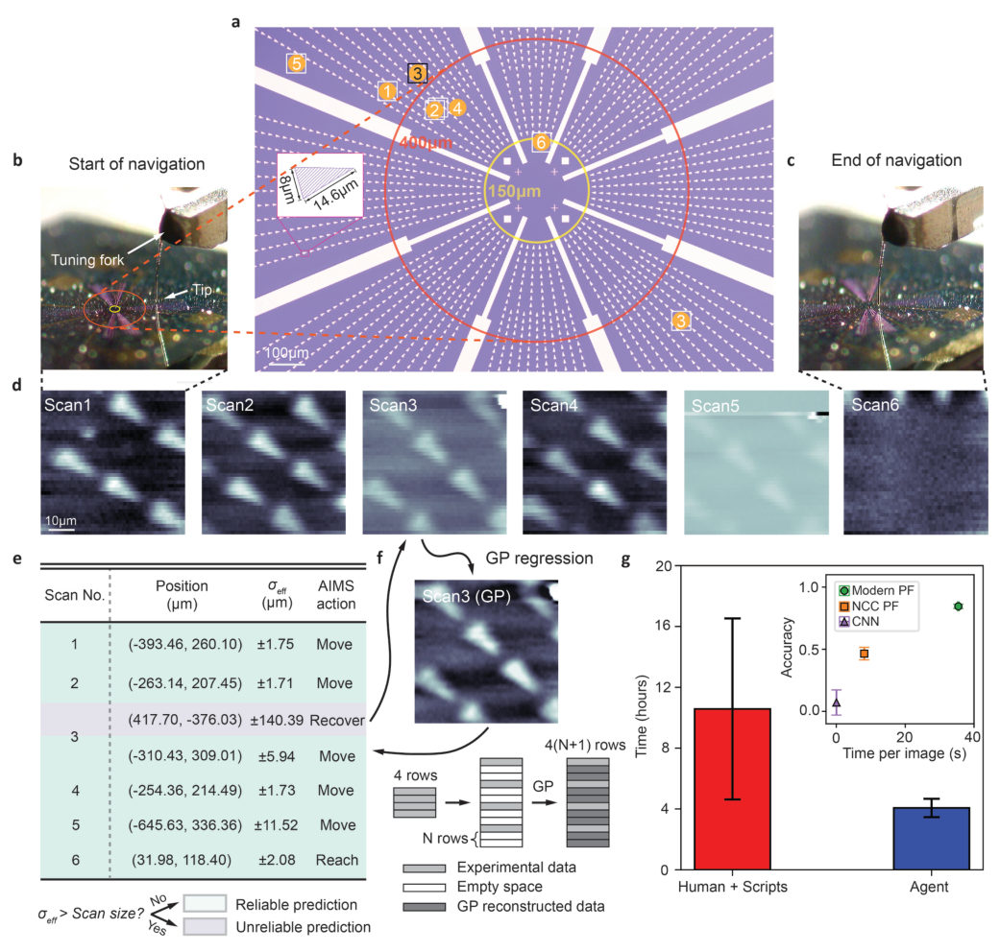
<figcaption class="paper-figure-caption"><b>Fig 2.</b> FIG. 2. AIMS locates the sample under cryogenic drift and recovers from unreliable position estimates. (a) Optical image of the marker chip. The white squares in numerical order mark the predicted positions of MIM scans taken at each step. The black square marks the predicted position of Scan 3 after GP regression reconstruction. The yellow and orange circles highlight 150 µm and 400 µm from the pattern’s center respectively. The inset shows the design geometry of the lateral triangular arrow marker. (b) &amp; (c) Optical image of the tip with respect to the marker pattern at initial position after approaching (Scan 1) and final position after the sample locating process ends (Scan 6)...</figcaption>
</figure>
<figure class="paper-figure-card">
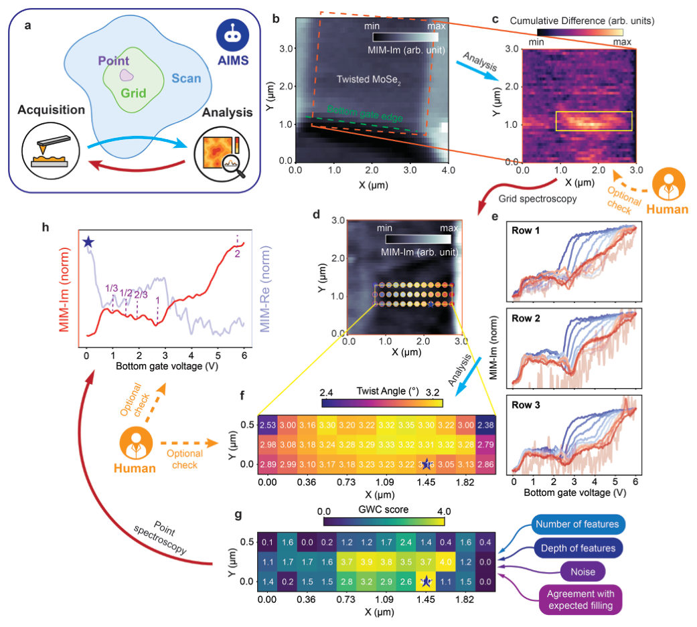
<figcaption class="paper-figure-caption"><b>Fig 3.</b> FIG. 3. AIMS selects measurement sites in a disordered twisted MoSe2 device and resolves fractional generalized Wigner crystal states. (a) Schematic of AIMS-driven measurement loop. The process iterates between data acquisition and analysis, progressively narrowing the region of interest from a large scan area to a smaller grid and ultimately to the single optimal measurement point, thereby improving experimental efficiency. Red and blue arrows in the remaining panels denote the acquisition-to-analysis and analysis-to-acquisition directions, respectively. The orange dashed lines coupled to human represents the optional checks that human researcher can perform. (b) MIM-Im scan on the twisted...</figcaption>
</figure>
<figure class="paper-figure-card">
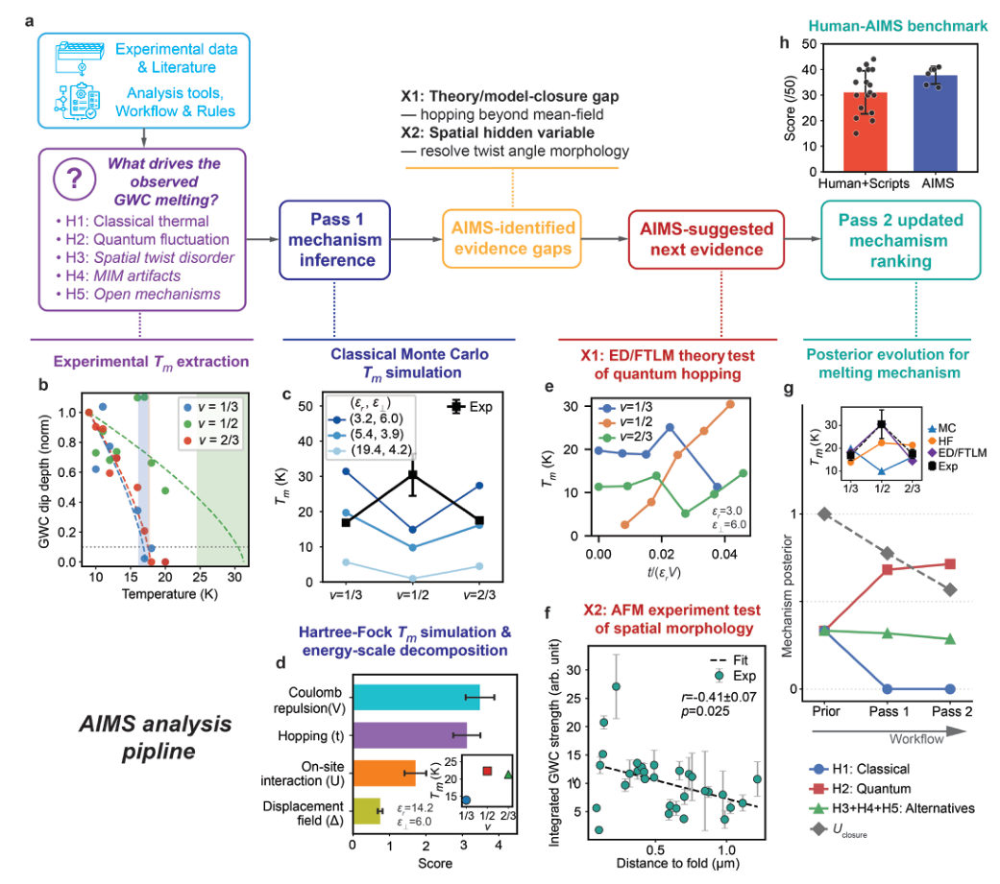
<figcaption class="paper-figure-caption"><b>Fig 4.</b> FIG. 4. A closed AIMS discovery loop traces the anomalous stability of the half-filled generalized Wigner crystal to quantum fluctuations. (a) Discovery workflow of AIMS. A curated database of literature [30, 35, 46, 49–56] and experimental data, together with data analysis tools, workflows and rules as MIM discovery skills, is supplied to AIMS prior to each run. A scientific question is posed by human to AIMS as prompt alongside the physics priors and hypotheses (H1 – H2). With these information, AIMS adds its new hypotheses (H3 – H5), performs the first pass of analysis and score each hypothesis with Bayesian inference. To improve the credibility of its judgment, AIMS identifies the...</figcaption>
</figure>
</div>

<p><strong>Summary.</strong> This work introduces AIMS, an advanced AI agent that autonomously guides experiments on quantum materials to resolve fundamental physical questions. By integrating perception recovery, targeted measurement selection based on local disorder, and iterative hypothesis testing, it successfully identified the role of quantum fluctuations in stabilizing fractional Wigner crystal states.</p>
<p><strong>Why it may be interesting.</strong> It provides a blueprint for how AI can tackle complex many-body physics problems by systematically mapping out the parameter space of uncertainty, which is crucial for understanding emergent quantum phases in strongly correlated systems.</p>
<details>
<summary>Detailed structure</summary>
<p><strong>Main problem.</strong> To autonomously discover the physical mechanism responsible for the anomalous stability of fractional Wigner crystal states in quantum materials.</p>
<p><strong>Main result.</strong> The study demonstrates that the exceptional robustness of the $
u=1/2$ state is primarily due to quantum-fluctuation renormalization effects involving electron hopping, rather than purely classical charge ordering.</p>
<p><strong>Method.</strong> An uncertainty-aware closed-loop AI agent (AIMS) was developed to guide experiments by managing perception errors, selecting optimal measurement sites based on local inhomogeneity, and iteratively refining physical hypotheses.</p>
<p><strong>Model / system.</strong> The system involves twisted bilayer $   ext{MoSe}_2$ moiré superlattices exhibiting correlated insulating states. The analysis compares results from classical Monte Carlo simulations against advanced quantum models like Hartree-Fock and Exact Diagonalization.</p>
<p><strong>Key observables.</strong> Melting temperature ($T_m$) hierarchy across different filling factors ($
u=1/3, 1/2, 2/3$), Generalized Wigner Crystal (GWC) score maps, and local twist angle distributions.</p>
<p><strong>Important parameters / regimes.</strong> Twist angle disorder ($ heta \approx 3.13^\circ$), hopping energy ($t$), Coulomb repulsion strength, and various energy scale ratios used in theoretical models.</p>
<p><strong>Assumptions / limitations.</strong> The framework assumes that the physical mechanism can be uncovered by iteratively testing hypotheses and quantifying uncertainty across multiple experimental passes.</p>
<p><strong>Figures summary.</strong> Figures illustrate AIMS's three nested loops (Navigation, Measurement Selection via GWC scoring, Discovery/Hypothesis Testing), showing recovery from poor data quality using GP reconstruction and comparing model predictions against measured $T_m$ values.</p>
<p><strong>Paper structure.</strong> The paper is structured around the AIMS framework: first demonstrating robust navigation under uncertainty; second, narrowing down measurement regions on inhomogeneous samples (GWC scoring); and finally, executing a closed-loop discovery process to distinguish between competing physical mechanisms governing correlated states.</p>
</details>
<details>
<summary>Abstract</summary>
<p>Autonomous scientific agents are beginning to accelerate discovery, but most demonstrations operate in digital or highly structured settings where the objects, actions, and objectives are largely predefined. Quantum materials experiments pose a harder problem where uncertainties involve: the instrument state can drift, the useful signal may occupy only rare regions of an inhomogeneous sample, and the physical mechanism is often under-determined. Here we introduce the AI agent for Inference and Measurement in Science (AIMS), an uncertainty-aware closed-loop AI experimentalist for cryogenic microwave impedance microscopy that converts uncertainty into experimental action. AIMS links three nested loops: navigation under uncertain perception, measurement selection under sample inhomogeneity, and scale-resolved mechanism attribution under ambiguous physics. In navigation, it relocates the sample after cryogenic displacement, flags unreliable position estimates, and invokes recovery strategies, significantly reducing sample-locating time. In measurement, it maps twist angle distribution and generalized Wigner crystal score of twisted bilayer MoSe$_2$ to identify regions with the strongest correlated response. In discovery, AIMS asks not whether melting is simply classical or quantum, but how the competition of Coulomb repulsion, hopping, and other energy scales shapes the observed hierarchy. By testing the classical limit, varying hopping and Coulomb scales, and preserving sample morphology as a secondary testable variable, AIMS prioritizes a quantum-fluctuation-renormalized origin of the anomalously robust $ν= 1/2$ crystal. AIMS demonstrates uncertainty-aware experimental agency for quantum matter with perception recovery, measurement choice, and energy-scale-resolved mechanism attribution in one closed loop.</p>
</details>
<p><sub><a href="#top">↑ back to top</a></sub></p>

<p><a id="paper-2607.16429"></a></p>
<h3 id="nonlocal-electrostatic-field-theory-from-microscopic-description"><a href="http://arxiv.org/abs/2607.16429v1">Nonlocal Electrostatic Field Theory from Microscopic Description</a></h3>
<p><strong>Authors:</strong> Varazdat Stepanyan, Yevgeni Sh. Mamasakhlisov, Armen E. Allahverdyan<br>
<strong>Type:</strong> theory · <strong>Category:</strong> statistical mechanics · <strong>PDF:</strong> <a href="https://arxiv.org/pdf/2607.16429v1">https://arxiv.org/pdf/2607.16429v1</a><br>
<strong>Analysis basis:</strong> full PDF text, analyzed in chunks
<strong>Topic relevance:</strong> <code>Keldysh / 2PI / non-Gaussian methods</code> <strong>3/5</strong> · <code>non-equilibrium dynamics</code> <strong>2/5</strong> · <code>analog quantum simulation</code> <strong>1/5</strong> · <code>correlated / nonlocal dissipation</code> <strong>1/5</strong> · <code>driven-dissipative phase transition</code> <strong>1/5</strong> · <code>methods for driven-dissipative</code> <strong>1/5</strong> · <code>non-equilibrium universality</code> <strong>1/5</strong></p>
<div class="figure-strip-hint">↔ Scroll figures horizontally</div>
<div class="paper-figures-scroll">
<figure class="paper-figure-card">
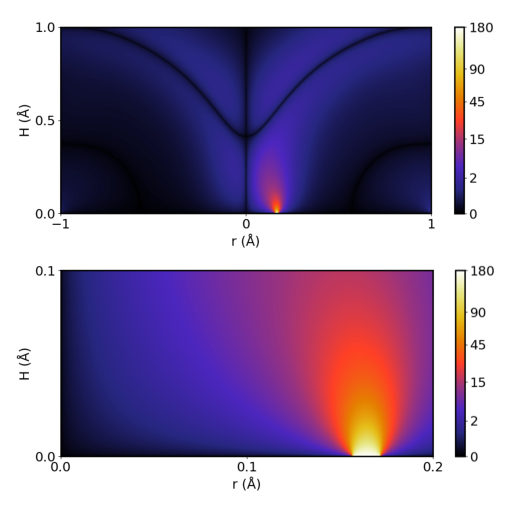
<figcaption class="paper-figure-caption"><b>Fig 1.</b> FIG. 2. Angle between Displacement (D) and Polarization (P ) for two point charges 2 e and 1 e at 2 ˚A distance. Here H is the height from the axis connecting the two charges. The rest of the parameters are T = 300 K, a = 0.5 ˚A, q = 1 e, c = 55 mol/l. The colormap is a power law with γ = 0.368.</figcaption>
</figure>
<figure class="paper-figure-card">
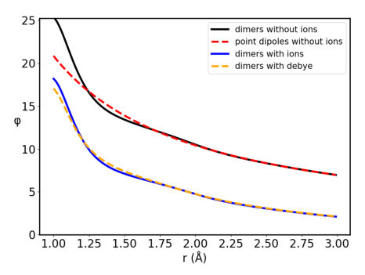
<figcaption class="paper-figure-caption"><b>Fig 2.</b> FIG. 1. The profile of electric field potential in a dimer solu- tion without ions (black, solid), point dipole solution without ions (red, dashed), dimer solution with ions (blue, solid) and dimer solution with Debye screening applied at post (yellow, dashed).</figcaption>
</figure>
</div>

<p><strong>Summary.</strong> This paper constructs a unified mean-field theory for non-equilibrium electrostatics in soft matter by starting from microscopic Langevin dynamics. It derives a generalized Poisson-Boltzmann equation that accounts for the finite size and structure of charged particles, moving beyond simple point-charge approximations. This framework allows for calculating macroscopic properties like permittivity without assuming a fixed solvent dielectric constant.</p>
<p><strong>Why it may be interesting.</strong> While focused on classical electrostatics, the rigorous derivation using stochastic processes (Langevin/Fokker-Planck) mirrors techniques used in open quantum systems theory when deriving master equations from microscopic Hamiltonians.</p>
<details>
<summary>Detailed structure</summary>
<p><strong>Main problem.</strong> To develop a unified theoretical framework for electrostatics in soft matter that moves beyond conventional theories by treating particles as extended, non-point-like structures.</p>
<p><strong>Main result.</strong> The authors derive a generalized Poisson-Boltzmann equation (GPBE) and an electrostatic free energy expression applicable to nonlocal nonlinear systems.</p>
<p><strong>Method.</strong> The theory starts from microscopic equations of motion (Langevin dynamics), derives the corresponding Fokker-Planck equation, and applies mean-field approximations to solve for equilibrium and non-equilibrium electrostatics.</p>
<p><strong>Model / system.</strong> The model considers a general mixture of charged molecular species or rigid bodies in an electrolyte solution. The formalism is built upon deriving stochastic equations (Langevin) and their corresponding probability density evolution (Fokker-Planck).</p>
<p><strong>Key observables.</strong> Electric potential ($\varphi$), polarization ($P$), displacement ($D$), anisotropic susceptibility, and the static permittivity $\hat{\varepsilon}(k, 0)$.</p>
<p><strong>Important parameters / regimes.</strong> Temperature ($T$), inverse temperature ($eta$), charge densities ($N_\alpha$), and molecular structure operators ($T_\alpha(\Omega)$).</p>
<p><strong>Assumptions / limitations.</strong> The mean-field approximation is used throughout. For equilibrium, detailed balance is assumed, and the initial derivation relies on assuming rigid internal structures.</p>
<p><strong>Figures summary.</strong> Not specified by notes; the focus is on deriving key equations (GPBE, linear response forms) rather than summarizing figure content.</p>
<p><strong>Paper structure.</strong> The paper progresses from establishing the microscopic dynamics via Langevin equations for rigid bodies to deriving the associated Fokker-Planck equation. This leads to the generalized Poisson-Boltzmann equation in equilibrium and its linearization for calculating dielectric properties.</p>
</details>
<details>
<summary>Abstract</summary>
<p>The study of electric fields in soft materials converges either to the study of point-like particles (local) in nonlinear theories or to the use of particles with finite sizes in nonlocal linear theories. In this work we start from the microscopic equations of motion and construct a unified mean field Fokker-Planck equation that describes the non-equilibrium electrostatics of nonlocal nonlinear systems. We obtain a generalized Poisson-Boltzmann equation for such systems as well as their electrostatic free energy expression. In the linear approximation we obtain an anisotropic susceptibility in an isotropic fluid which allows for local linear response inversion in electrostatics.</p>
</details>
<p><sub><a href="#top">↑ back to top</a></sub></p>

<p><a id="paper-2607.16984"></a></p>
<h3 id="transport-weighted-coercivity-in-granular-cro2-why-magnetoresistance-and-magnetization-can-disagree"><a href="http://arxiv.org/abs/2607.16984v1">Transport-Weighted Coercivity in Granular CrO2: Why Magnetoresistance and Magnetization Can Disagree</a></h3>
<p><strong>Authors:</strong> E. Yu. Beliayev, I. G. Mirzoiev, V. A. Horielyi, I. A. Chichibaba<br>
<strong>Type:</strong> both · <strong>Category:</strong> disordered systems and neural networks · <strong>PDF:</strong> <a href="https://arxiv.org/pdf/2607.16984v1">https://arxiv.org/pdf/2607.16984v1</a><br>
<strong>Analysis basis:</strong> full PDF text, analyzed in chunks
<strong>Topic relevance:</strong> <code>spintronics-quantum-optics interface</code> <strong>3/5</strong> · <code>non-equilibrium dynamics</code> <strong>2/5</strong> · <code>analog quantum simulation</code> <strong>1/5</strong> · <code>correlated / nonlocal dissipation</code> <strong>1/5</strong> · <code>driven-dissipative phase transition</code> <strong>1/5</strong> · <code>exotic spin models in light-matter</code> <strong>1/5</strong> · <code>non-equilibrium universality</code> <strong>1/5</strong></p>
<div class="figure-strip-hint">↔ Scroll figures horizontally</div>
<div class="paper-figures-scroll">
<figure class="paper-figure-card">
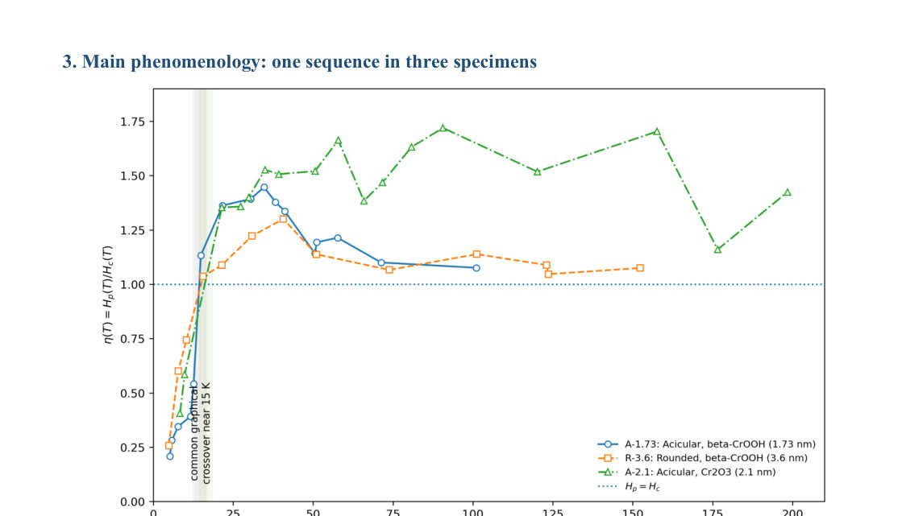
<figcaption class="paper-figure-caption"><b>Fig 1.</b> Fig. 1. Normalized ratio η(T) = Hp(T)/Hc(T) for three compacted CrO2 specimens. The Hp(T) and Hc(T) values were digitized from Fig. 3 of Ref. [13], and η(T) was calculated from these values. The vertical shaded ranges show the uncertainty in locating the low-temperature crossings from the digitized curves; they are not experimental confidence intervals. The three datasets suggest a common graphical crossover near 15 K, with baseline estimates spanning approximately 14–16 K. Fig. 1 condenses the central experimental observation. At elevated temperature, H/p is close to Hс. On cooling, Hp rises above Hc and reaches a sample-dependent maximum. At still lower temperature, the ratio crosses...</figcaption>
</figure>
<figure class="paper-figure-card">
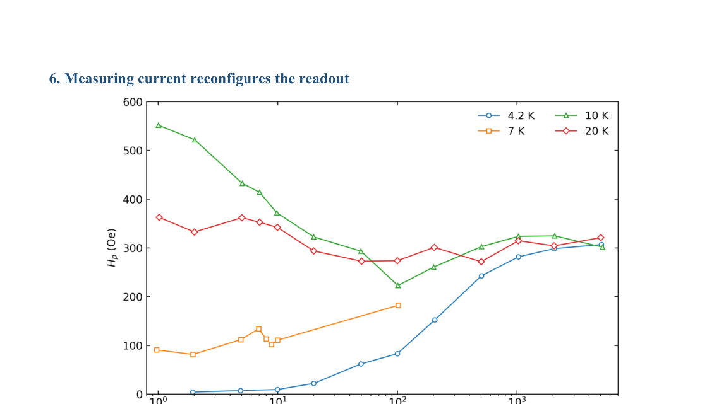
<figcaption class="paper-figure-caption"><b>Fig 2.</b> Fig. 2. Field Hp of the magnetoresistance maximum versus measuring current for specimen R-3.6. The temperature assignment follows the published caption: circles, 4.2 K; squares, 7 K; triangles, 10 K; diamonds, 20 K. Data were digitized from Fig. 7 of Ref. [13]. Lines are guides to the eye. The current dependence confirms that Hp is not a fixed property of the bulk magnet alone. At 20 K, Hp remains close to the bulk coercive-field scale. At 10 K it first decreases, consistent with local heating of the most resistive links, and then returns toward approximately 300 Oe as additional branches become electrically active. At 4.2 and 7 K, Hp rises from a low-current value toward the same bulk...</figcaption>
</figure>
</div>

<p><strong>Summary.</strong> This work demonstrates that measuring magnetoresistance hysteresis to find the coercive field in granular magnets is misleading because current flows only through a few critical junctions. The authors propose 'transport-weighted coercivity' as a diagnostic tool, showing how this electrical measurement can reveal information about local magnetic barriers distinct from the bulk magnetization average.</p>
<p><strong>Why it may be interesting.</strong> The concept of 'transport-weighted' properties in disordered magnetic systems mirrors concepts in neural networks where activity patterns dictate effective connectivity, making it relevant for understanding emergent macroscopic behavior from localized microscopic interactions.</p>
<details>
<summary>Detailed structure</summary>
<p><strong>Main problem.</strong> The coercive field estimated from magnetoresistance hysteresis ($H_p$) often disagrees with the bulk coercive field ($H_c$) in granular magnetic conductors.</p>
<p><strong>Main result.</strong> This discrepancy is due to electrical current paths being localized to a small, highly sensitive subset of interparticle junctions, leading to a 'transport-weighted coercivity' that differs from the volume average.</p>
<p><strong>Method.</strong> The authors reanalyzed magnetotransport and magnetometry data on $  ext{CrO}_2$ powders, comparing $H_p$ (from MR peak) against $H_c$ (from magnetization zero crossing).</p>
<p><strong>Model / system.</strong> The system is compacted powder of the half-metallic ferromagnet $   ext{CrO}_2$, where electrical conduction occurs via spin-dependent tunneling through insulating barriers between magnetic grains.</p>
<p><strong>Key observables.</strong> The ratio $\eta = H_p/H_c$; $H_p$ vs. measuring current; and the temperature dependence of this ratio.</p>
<p><strong>Important parameters / regimes.</strong> Temperature (especially crossover near 15 K); measuring bias current; particle shape and insulating shell thickness.</p>
<p><strong>Assumptions / limitations.</strong> The analysis relies on Cohn's network-sensitivity theorem, which weights contacts by the square of the local current flow. The low-temperature behavior is interpreted via a 'soft-bottleneck picture'.</p>
<p><strong>Figures summary.</strong> Figure 1 shows that the ratio $\eta(T) = H_p(T)/H_c(T)$ exhibits a common qualitative sequence across different samples, crossing unity near 15 K.</p>
<p><strong>Paper structure.</strong> The paper establishes the failure of equating $H_p$ and $H_c$, introduces Cohn's theorem to define transport weights, analyzes how temperature controls which junctions dominate the current path (leading to the $\eta$ sequence), and concludes that the difference $H_p - H_c$ is a diagnostic tool.</p>
</details>
<details>
<summary>Abstract</summary>
<p>Magnetoresistance hysteresis is often used to estimate the coercive field of a magnetic material. We reanalyse our published magnetotransport and magnetometry data on compacted powders of the half-metallic ferromagnet CrO2 and show that this identification can fail in a granular conductor. The field Hp at the resistance maximum may be close to, above, or below the bulk coercive field Hc, depending on temperature and measuring current. For three samples with different particle shapes and insulating-shell thicknesses, the digitized ratio Hp/Hc follows the same qualitative sequence and suggests a common crossover near 15 K. We interpret this behaviour as a change in which interparticle junctions control the electrical response. Bulk magnetometry averages over the entire magnetic volume, whereas tunnelling resistance gives the largest weight to the small set of links that carries the current. Cohn's exact network-sensitivity theorem provides a rigorous linear-response definition of these transport weights. In simple terms, Cohn showed that the influence of a given contact on the total resistance is proportional to the square of the current flowing through that contact. Combined with known magnetic pair-correlation effects, this leads to the concept of transport-weighted coercivity. In granular sensors and spin-dependent composites, the resistance peak cannot automatically be treated as the bulk coercive field. Conversely, the difference Hp - Hc may serve as a diagnostic of current-path localization, barrier evolution, and device-to-device variability.</p>
</details>
<p><sub><a href="#top">↑ back to top</a></sub></p>

<p><a id="paper-2607.17086"></a></p>
<h3 id="against-many-worlds"><a href="http://arxiv.org/abs/2607.17086v1">Against Many Worlds</a></h3>
<p><strong>Authors:</strong> Emily Adlam, Jacob A. Barandes<br>
<strong>Type:</strong> theory · <strong>Category:</strong> other · <strong>PDF:</strong> <a href="https://arxiv.org/pdf/2607.17086v1">https://arxiv.org/pdf/2607.17086v1</a><br>
<strong>Analysis basis:</strong> full PDF text, analyzed in chunks
<strong>Topic relevance:</strong> <code>quantum measurements</code> <strong>3/5</strong> · <code>measurement-induced transitions</code> <strong>2/5</strong> · <code>Keldysh / 2PI / non-Gaussian methods</code> <strong>1/5</strong> · <code>correlated / nonlocal dissipation</code> <strong>1/5</strong> · <code>driven-dissipative phase transition</code> <strong>1/5</strong> · <code>entanglement &amp; information structure</code> <strong>1/5</strong></p>
<div class="figure-strip-hint">↔ Scroll figures horizontally</div>
<div class="paper-figures-scroll">
<figure class="paper-figure-card">
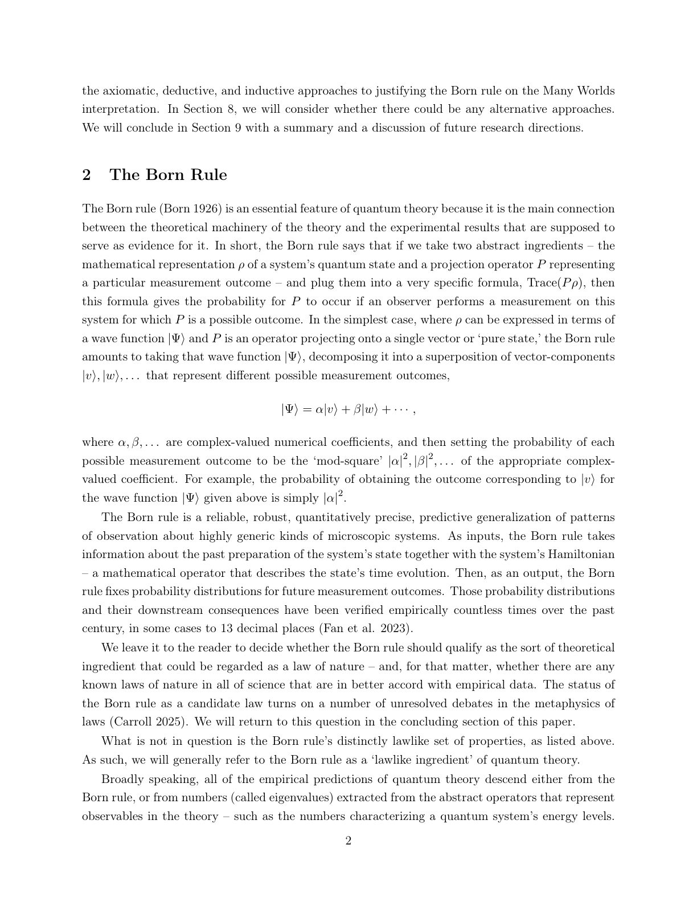
<figcaption class="paper-figure-caption"><b>Fig 1.</b> Low-resolution page preview, page 2</figcaption>
</figure>
<figure class="paper-figure-card">
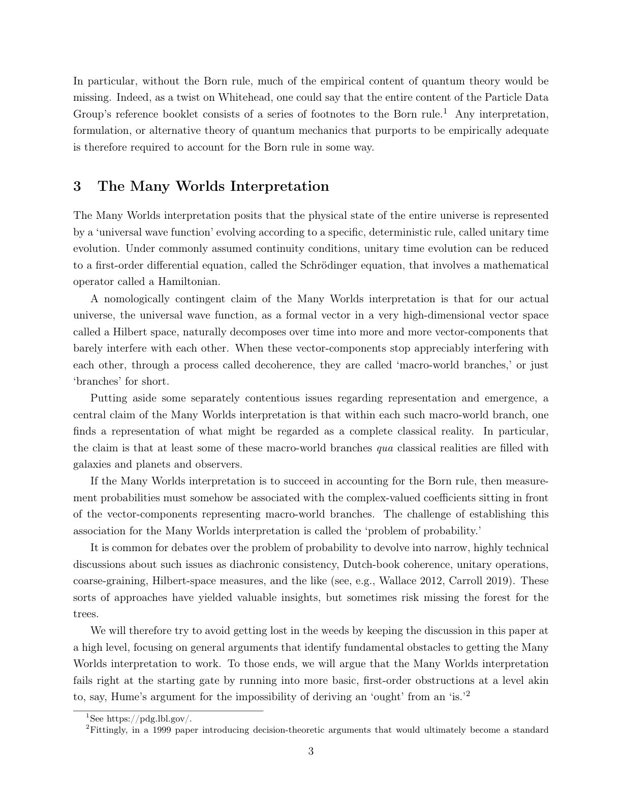
<figcaption class="paper-figure-caption"><b>Fig 2.</b> Low-resolution page preview, page 3</figcaption>
</figure>
<figure class="paper-figure-card">
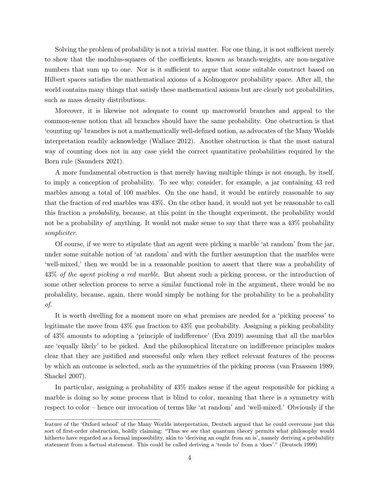
<figcaption class="paper-figure-caption"><b>Fig 3.</b> Low-resolution page preview, page 4</figcaption>
</figure>
<figure class="paper-figure-card">
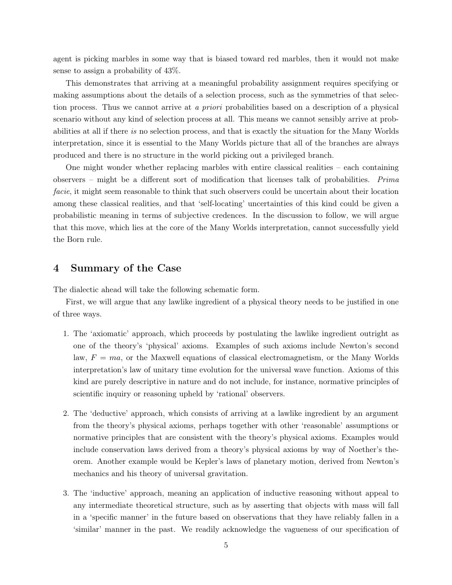
<figcaption class="paper-figure-caption"><b>Fig 4.</b> Low-resolution page preview, page 5</figcaption>
</figure>
<figure class="paper-figure-card">
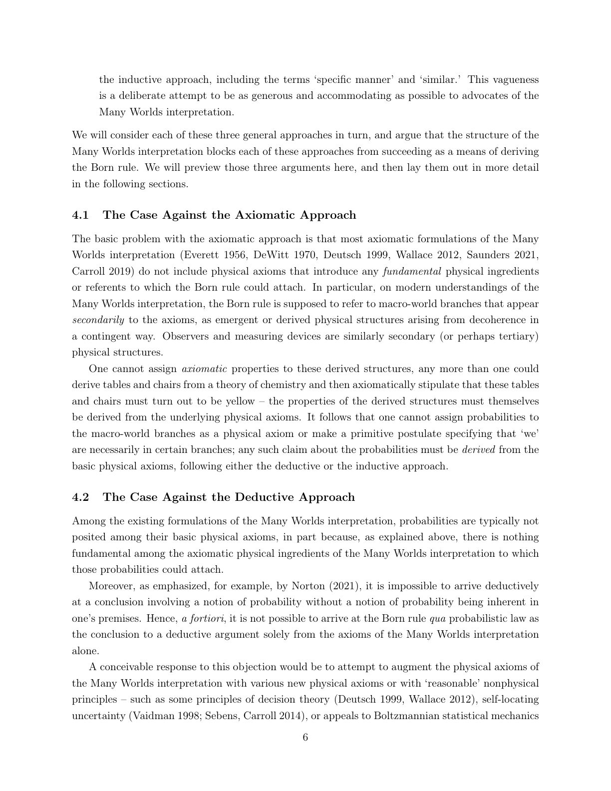
<figcaption class="paper-figure-caption"><b>Fig 5.</b> Low-resolution page preview, page 6</figcaption>
</figure>
</div>

<p><strong>Summary.</strong> This paper provides a rigorous philosophical and physical critique of how the Born rule can be justified within the Many Worlds Interpretation. The authors argue that standard logical tools—axioms, deduction, and induction—all fail to bridge the gap between unitary quantum evolution and observed probabilities. It highlights that MWI lacks an inherent mechanism to select or weight outcomes into measurable probabilities.</p>
<p><strong>Why it may be interesting.</strong> While not focused on specific AMO platforms, the deep theoretical critique of probability assignment methods is highly relevant for any field dealing with open quantum systems or measurement processes where probabilistic outcomes are central.</p>
<details>
<summary>Detailed structure</summary>
<p><strong>Main problem.</strong> The central problem is deriving the Born rule—the probabilistic link between quantum theory's unitary evolution and its empirical predictions—within the Many Worlds Interpretation (MWI). The authors argue that standard methods fail to provide this derivation.</p>
<p><strong>Main result.</strong> Structurally, none of the three primary approaches (axiomatic, deductive, or inductive) can successfully account for the Born rule within MWI due to fundamental obstructions related to selection processes.</p>
<p><strong>Method.</strong> The paper employs a critical analysis by examining and critiquing the logical requirements of axiomatic postulation, deduction from first principles, and induction in the context of MWI's ontology.</p>
<p><strong>Model / system.</strong> The physical system is quantum theory evolving unitarily according to the Schrödinger equation. The model analyzed is the Many Worlds Interpretation (MWI), where universal wave functions decompose into non-interfering branches.</p>
<p><strong>Key observables.</strong> Probabilities derived from the modulus-square of complex coefficients ($|\alpha|^2$), which must be justified as a lawlike ingredient.</p>
<p><strong>Important parameters / regimes.</strong> The structure of the Hamiltonian and the nature of the wave function decomposition are central, but no specific numerical parameters are discussed.</p>
<p><strong>Assumptions / limitations.</strong> The analysis assumes standard frameworks for scientific justification (axiomatic, deductive, inductive) and critiques the assumption that a physical process inherently dictates probability measures.</p>
<p><strong>Paper structure.</strong> The paper systematically analyzes the problem of the Born rule in MWI by first outlining the necessity of the rule. It then dedicates sections to critiquing the axiomatic, deductive, and inductive approaches separately before concluding with a generalized statement about the difficulty of deriving probabilities.</p>
</details>
<details>
<summary>Abstract</summary>
<p>Any viable interpretation of quantum theory needs to account for the Born rule, from which the theory gets its probabilistic empirical predictions. In this paper, we give an overview of possible approaches to this problem in the context of the Many Worlds interpretation. We argue that, for structural reasons, none of them can possibly succeed. More precisely, we argue that the Many Worlds interpretation must obtain the Born rule by proceeding either axiomatically, deductively, or inductively, and that all three of these approaches run into general, fundamental obstructions.</p>
</details>
<p><sub><a href="#top">↑ back to top</a></sub></p>

<p><a id="paper-2607.18238"></a></p>
<h3 id="color-superconductors-and-holon-metals-from-doping-a-fractional-chern-insulator"><a href="http://arxiv.org/abs/2607.18238v1">Color superconductors and holon metals from doping a Fractional Chern insulator</a></h3>
<p><strong>Authors:</strong> Ya-Hui Zhang<br>
<strong>Type:</strong> theory · <strong>Category:</strong> strongly correlated electrons · <strong>PDF:</strong> <a href="https://arxiv.org/pdf/2607.18238v1">https://arxiv.org/pdf/2607.18238v1</a><br>
<strong>Analysis basis:</strong> full PDF text, analyzed in chunks
<strong>Topic relevance:</strong> <code>Keldysh / 2PI / non-Gaussian methods</code> <strong>3/5</strong> · <code>analog quantum simulation</code> <strong>2/5</strong> · <code>correlated cavity matter</code> <strong>1/5</strong> · <code>driven-dissipative phase transition</code> <strong>1/5</strong> · <code>entanglement &amp; information structure</code> <strong>1/5</strong> · <code>methods for driven-dissipative</code> <strong>1/5</strong></p>
<div class="figure-strip-hint">↔ Scroll figures horizontally</div>
<div class="paper-figures-scroll">
<figure class="paper-figure-card">
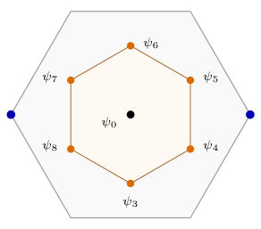
<figcaption class="paper-figure-caption"><b>Fig 1.</b> FIG. 1. Momentum assignment of the nine fields in Eq. (6). The black center is the singlet under the SU(3)v symmetry after the locking U = V , the blue pair is the C6 orbit (ψ1, ψ2), and the orange inner hexagon is the six-field orbit (ψ3, . . . , ψ8).</figcaption>
</figure>
</div>

<p><strong>Summary.</strong> This theoretical paper develops a unified framework for understanding the metallic and superconducting phases resulting from doping a Fractional Chern Insulator. By treating holons as quarks, it connects the physics to color superconductivity while detailing how various pairing instabilities lead to specific topological states. The work is significant for mapping out complex phase diagrams in strongly correlated quantum materials.</p>
<p><strong>Why it may be interesting.</strong> The work provides a rich playground for studying emergent topological order and symmetry breaking in strongly correlated electron systems, drawing parallels between high-energy color superconductivity and condensed matter phenomena like FCI doping.</p>
<details>
<summary>Detailed structure</summary>
<p><strong>Main problem.</strong> The paper develops a unified theoretical framework to describe both metallic and superconducting phases that emerge when doping a Fractional Chern Insulator (FCI). It connects this problem to color superconductivity found in high-energy physics.</p>
<p><strong>Main result.</strong> The analysis predicts multiple stable states, including charge-$2e$ superconductors arising from color-antisymmetric pairing, and various holon metal phases ($\mathbb{Z}_3$ or $  ext{U}(1)_2$) depending on the doping level and symmetry preservation.</p>
<p><strong>Method.</strong> The study employs a parton construction approach to derive low-energy effective theories characterized by $ ext{SU}(3)<em _mathrm_valley="\mathrm{valley">{\mathrm{gauge}} imes    ext{SU}(3)</em>$ symmetry. Pairing instabilities are analyzed using gap equations derived from bilinears added to the kinetic term.}</p>
<p><strong>Model / system.</strong> The system is an FCI doped with $C=1/3$, modeled by nine charge-$e/3$ holon pockets ($\psi_{ab}$) whose dynamics are governed by a low-energy effective Hamiltonian incorporating gauge and pairing terms. The underlying lattice structure is triangular, though square lattice analogues are also analyzed for symmetry constraints.</p>
<p><strong>Key observables.</strong> Chiral central charge ($c_-=m/2$), superconducting gap structures (e.g., gapless Bogoliubov Fermi surface), and the nature of emergent symmetries ($ ext{SU}(3)_v$ vs $S_3$).</p>
<p><strong>Important parameters / regimes.</strong> Doping level ($n = 1/3 - x$), chemical potential ($\mu$), and the specific pairing channel (e.g., color-antisymmetric).</p>
<p><strong>Assumptions / limitations.</strong> The analysis assumes that only doped holes are dynamical degrees of freedom in the $x 	o 0$ limit, and certain symmetry reductions (like $    ext{SU}(3)_v    o S_3$) are considered approximations.</p>
<p><strong>Figures summary.</strong> Figure 1 maps the nine field momenta ($\psi_0$ to $\psi_8$) onto the Brillouin zone; Figure 2 shows the momentum assignment for a square lattice realization, detailing three distinct space-group orbits.</p>
<p><strong>Paper structure.</strong> The paper builds from establishing the general symmetry framework using the parton construction, analyzing superconducting pairing instabilities (color superconductivity), then examining metallic phases via Higgsing mechanisms ($\mathbb{Z}_3$ or $   ext{U}(1)_2$), and finally discussing the continuous transition between these regimes.</p>
</details>
<details>
<summary>Abstract</summary>
<p>We develop a unified framework for metallic and superconducting phases obtained by doping a fractional Chern insulator (FCI) with $C=1/3$. Starting from the parton construction $c(\mathbf r)=f_1(\mathbf r)f_2(\mathbf r)f_3(\mathbf r)$, the low-energy theory has $SU(3)_{\mathrm{gauge}}\times SU(3)_{\mathrm{valley}}$ symmetry and nine Fermi pockets formed by charge-$-e/3$ holons $ψ_{ab}$, where $a$ and $b$ label color and valley. Viewing the holons as quarks connects this problem to color superconductivity in high-energy physics. Color-antisymmetric pairing produces a class of charge-$2e$ superconductors with angular momentum $L=3n$ and chiral central charge $c_-=m/2$, where $m$ is odd. Thus a gas of charge-$e/3$ anyons can enter a superconducting phase directly without binding. Particle--hole color--valley Higgs fields instead produce two $Z_3$ orthogonal metals with one or three pockets, transforming respectively as a singlet or triplet of $SU(3)_{\mathrm{valley}}$. A $U(1)^2$ holon metal with three identical pockets can preserve the triangular-lattice space group while reducing the emergent valley symmetry down to $S_3$. Its pairing instabilities include a gapped charge $2e$ $f-if$ superconductor and a gapless charge-$2e$ orthogonal superconductor with $\langle cc\rangle=0$ and a Bogoliubov Fermi surface at $Γ$. Finally, we discuss the possibility of a chemical-potential-tuned transition from the FCI to superconductivity and argue that all nine fermions may be required if the transition preserves the full emergent $SU(3)_v$ symmetry.</p>
</details>
<p><sub><a href="#top">↑ back to top</a></sub></p>

<p><a id="paper-2607.16971"></a></p>
<h3 id="occupation-condensation-transition-of-a-sublinearly-vertex-reinforced-random-walk-on-regular-tree"><a href="http://arxiv.org/abs/2607.16971v1">Occupation-condensation transition of a sublinearly vertex-reinforced random walk on regular tree</a></h3>
<p><strong>Authors:</strong> Bon A Koo, Edward Ju<br>
<strong>Type:</strong> theory · <strong>Category:</strong> statistical mechanics · <strong>PDF:</strong> <a href="https://arxiv.org/pdf/2607.16971v1">https://arxiv.org/pdf/2607.16971v1</a><br>
<strong>Analysis basis:</strong> full PDF text, analyzed in chunks
<strong>Topic relevance:</strong> <code>non-equilibrium dynamics</code> <strong>3/5</strong> · <code>analog quantum simulation</code> <strong>2/5</strong> · <code>non-equilibrium universality</code> <strong>2/5</strong> · <code>driven-dissipative phase transition</code> <strong>1/5</strong> · <code>methods for driven-dissipative</code> <strong>1/5</strong></p>
<div class="figure-strip-hint">↔ Scroll figures horizontally</div>
<div class="paper-figures-scroll">
<figure class="paper-figure-card">
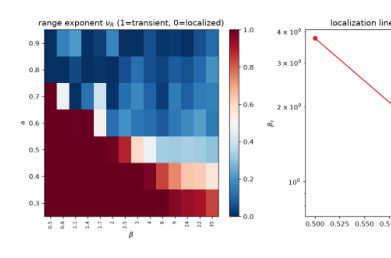
<figcaption class="paper-figure-caption"><b>Fig 1.</b> Figure 1: Condensation of the sublinear VRRW on the binary tree (b = 2). Left: range exponent νR in the (a, β) plane; νR = 1 (dark red) is linear spreading, small νR (dark blue) the condensed regime. Middle: transition line βc(a) from νR = 1/2, on a logarithmic β axis; βc decreases with a and rises steeply as a falls below ≈0.4. Right: condensate fraction m1 at t = 106 against β for several a; the rise marks the onset of condensation.</figcaption>
</figure>
<figure class="paper-figure-card">
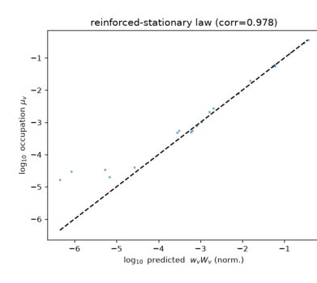
<figcaption class="paper-figure-caption"><b>Fig 2.</b> Figure 2: Occupation of the condensed core (a = 0.7, β = 4, t = 3 × 105). Left: measured occupation µv against the reversible prediction wvWv of Eq. (4) (both normalized); the dashed line is µv = wvWv. Right: occupation of the most visited vertex at each depth, showing the core droplet peaked a few levels below the root.</figcaption>
</figure>
<figure class="paper-figure-card">
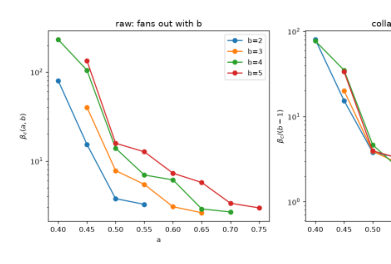
<figcaption class="paper-figure-caption"><b>Fig 3.</b> Figure 3: The branching-number law (11). Left: measured lines βc(a, b) for b = 2, 3, 4, 5 (from νR = 1/2), which fan out with b. Middle: the same divided by b −1; the four lines collapse, confirming βc ∝b −1 (see Table 1 for the quantitative version with confidence intervals). Right: the occupancy scale ¯m(a) = ((b−1)/βc)1/a, which is b-independent and increases with a.</figcaption>
</figure>
<figure class="paper-figure-card">
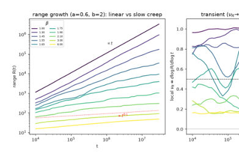
<figcaption class="paper-figure-caption"><b>Fig 4.</b> Figure 4: Observation-time analysis at a = 0.6, b = 2, to t = 3 × 107 (24 realizations). Left: mean range R(t); the range grows for every β, linearly below βc and very slowly above (the ∝t0.1 guide is an effective-exponent reference; held-out extrapolation favours logarithmic growth). Middle: local exponent νR(t); it tends to 1 below βc and to a small value ≈0.1 above, without reaching zero. Right: the νR = 1/2 crossing βc(tmax), showing no systematic drift across the accessible decades (scatter of order 0.1).</figcaption>
</figure>
<figure class="paper-figure-card">
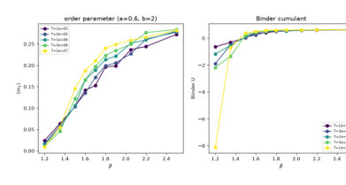
<figcaption class="paper-figure-caption"><b>Fig 5.</b> Figure 5: Occupancy statistics at a = 0.6, b = 2, with t from 105 to 107. From left: ensemble mean ⟨m1⟩; Binder cumulant U, which tends to 2/3 in the condensed phase and dips negative on the spreading side; susceptibility χ = t Var(m1), whose peak near β ≈1.5 grows with t; and the distribution of m1 at t = 107, a spike at m1 ≈0 coexisting with a broad condensed lobe. The signatures are of a coexistence-type crossover; we do not claim a proven first-order transition.</figcaption>
</figure>
</div>

<p><strong>Summary.</strong> This work characterizes the occupation-condensation transition in a vertex-reinforced random walk on regular trees. The transition occurs at a critical reinforcement strength $\beta_c$, causing the walker's time spent to concentrate (condense) onto a small core set of vertices. This study uses scaling arguments and geometric constraints to map out this non-equilibrium phase boundary.</p>
<p><strong>Why it may be interesting.</strong> The study of non-equilibrium dynamics in geometrically constrained systems, like random walks on trees, provides a rich analogy for understanding energy/information localization or phase transitions in complex quantum many-body systems.</p>
<details>
<summary>Detailed structure</summary>
<p><strong>Main problem.</strong> The paper investigates the occupation-condensation transition of a sublinearly vertex-reinforced random walk (VRRW) on regular trees.</p>
<p><strong>Main result.</strong> A sharp condensation transition exists at $\beta_c(a, b)$, where above this threshold, the walker's occupation concentrates on a few vertices while the overall range grows only logarithmically with time.</p>
<p><strong>Method.</strong> The analysis combines simulation studies of range exponents and condensate fractions with theoretical derivations based on reversible stationary measures for the core region.</p>
<p><strong>Model / system.</strong> The model is a VRRW on a rooted $b$-ary tree, where movement probability to a neighbor depends on previous visit counts via a sublinear reinforcement term ($1 + \beta n^a$).</p>
<p><strong>Key observables.</strong> Range exponent ($\nu_R$), condensate fraction ($m_1$), and the transition line $\beta_c(a, b)$.</p>
<p><strong>Important parameters / regimes.</strong> Memory strength $a \in (0, 1)$, reinforcement coupling $\beta$, and tree branching number $b$.</p>
<p><strong>Assumptions / limitations.</strong> The analysis relies on distinguishing between condensation and finite-range localization, and uses a 'frozen environment' approximation to determine the transition scaling law.</p>
<p><strong>Figures summary.</strong> Figures illustrate the range exponent crossing at $\beta_c$, show the collapse of the transition line $\beta_c/(b-1)$ for different $b$, and display the condensate fraction plateauing above threshold.</p>
<p><strong>Paper structure.</strong> The paper systematically analyzes the phase diagram by defining observables ($
u_R, m_1$), deriving theoretical predictions from reversible measures (the core), and confirming scaling laws ($\beta_c \propto b-1$) through data collapse across multiple geometries ($b=2, 3, 4$).</p>
</details>
<details>
<summary>Abstract</summary>
<p>A vertex-reinforced random walk steps to a neighbour with probability proportional to $1+βn^{a}$, where $n$ counts previous visits to that neighbour and $a\in(0,1)$ sets the memory strength. On the rooted $b$-ary tree the exponential growth of the vertex set drives the walk outward while the reinforcement pulls it back. We report a sharp condensation transition of the occupation measure at a finite $β_c(a,b)$: below it the occupation spreads and the range grows linearly; above it a single vertex holds an $O(1)$ fraction of the time, stable in the observation time, while the range keeps growing very slowly, at a rate better described by $\log t$ than by any power. We do not find the range to be bounded, and keep this condensation distinct from finite-range localization. Four estimators locate the same threshold, which shows no systematic drift out to $t=3\times10^{7}$. In a frozen environment the walk is reversible, with edge conductances $c_{uv}=w_{u}w_{v}$, $w_{v}=1+βn_{v}^{a}$, and measure $μ_{v}\propto w_{v}\sum_{u\sim v}w_{u}$ describing the condensed core, whose neighbour coupling we test directly. Reversibility places the escape at the frontier within the branching-number criterion for biased walks on trees, predicting $β_c\propto b-1$; the measured lines for $b=2,3,4$ collapse under division by $b-1$ to a few percent (bootstrap). The value $a=1/2$ that governs the walk on $\mathbb{Z}$ enters only as the marginal exponent of the condensed profile. Near $β_c$ the occupancy is non-self-averaging and bimodal, a coexistence-type phenomenology.</p>
</details>
<p><sub><a href="#top">↑ back to top</a></sub></p>

<p><a id="paper-2607.17871"></a></p>
<h3 id="on-the-use-of-the-belopolskaya-daletskii-representation-of-a-diffusion-on-a-riemann-manifold-to-construct-path-integrals"><a href="http://arxiv.org/abs/2607.17871v1">On the use of the Belopol'skaya-Daletskii representation of a diffusion on a Riemann manifold to construct path integrals</a></h3>
<p><strong>Authors:</strong> Paolo Muratore-Ginanneschi<br>
<strong>Type:</strong> theory · <strong>Category:</strong> statistical mechanics · <strong>PDF:</strong> <a href="https://arxiv.org/pdf/2607.17871v1">https://arxiv.org/pdf/2607.17871v1</a><br>
<strong>Analysis basis:</strong> full PDF text, analyzed in chunks
<strong>Topic relevance:</strong> <code>Keldysh / 2PI / non-Gaussian methods</code> <strong>3/5</strong> · <code>non-equilibrium dynamics</code> <strong>2/5</strong> · <code>correlated / nonlocal dissipation</code> <strong>1/5</strong> · <code>driven-dissipative phase transition</code> <strong>1/5</strong> · <code>methods for driven-dissipative</code> <strong>1/5</strong> · <code>non-equilibrium universality</code> <strong>1/5</strong></p>
<div class="figure-strip-hint">↔ Scroll figures horizontally</div>
<div class="paper-figures-scroll">
<figure class="paper-figure-card">
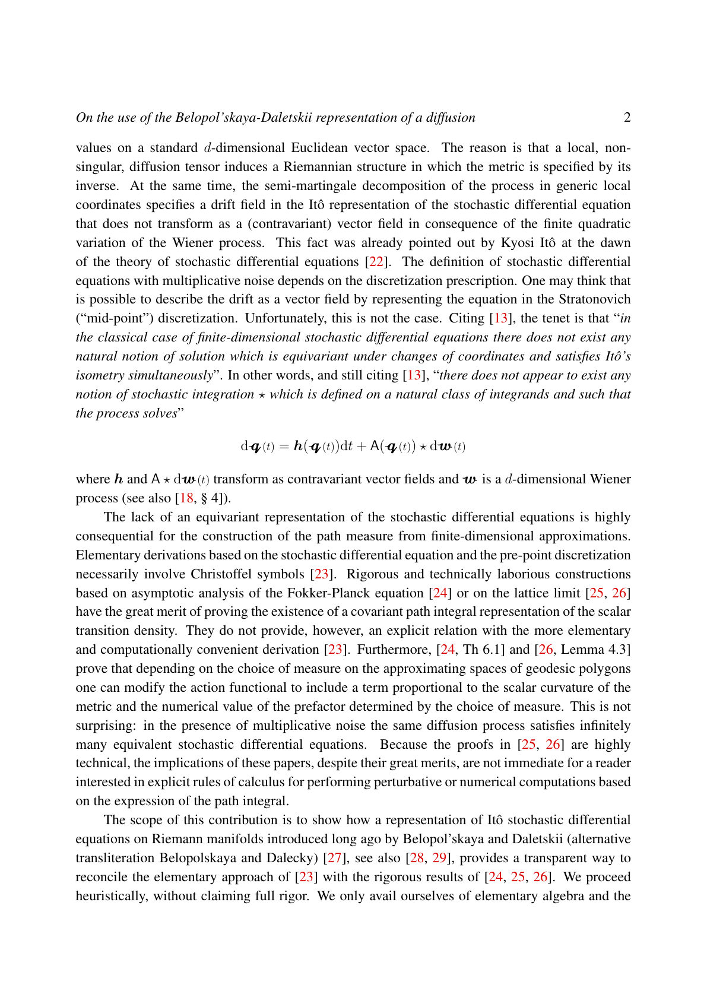
<figcaption class="paper-figure-caption"><b>Fig 1.</b> Low-resolution page preview, page 2</figcaption>
</figure>
<figure class="paper-figure-card">
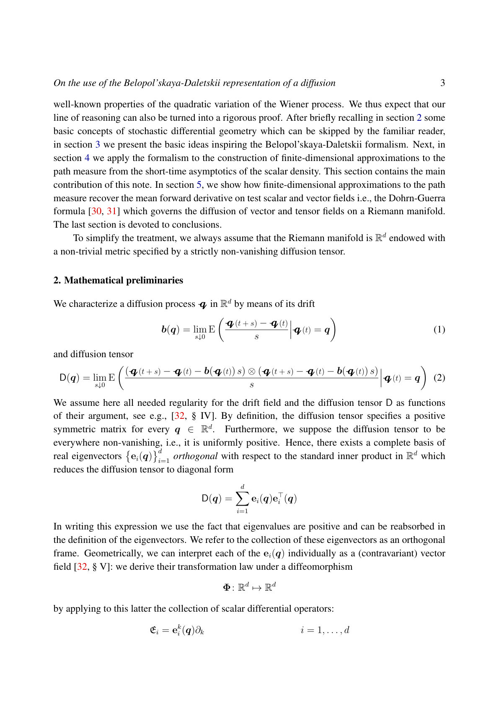
<figcaption class="paper-figure-caption"><b>Fig 2.</b> Low-resolution page preview, page 3</figcaption>
</figure>
<figure class="paper-figure-card">
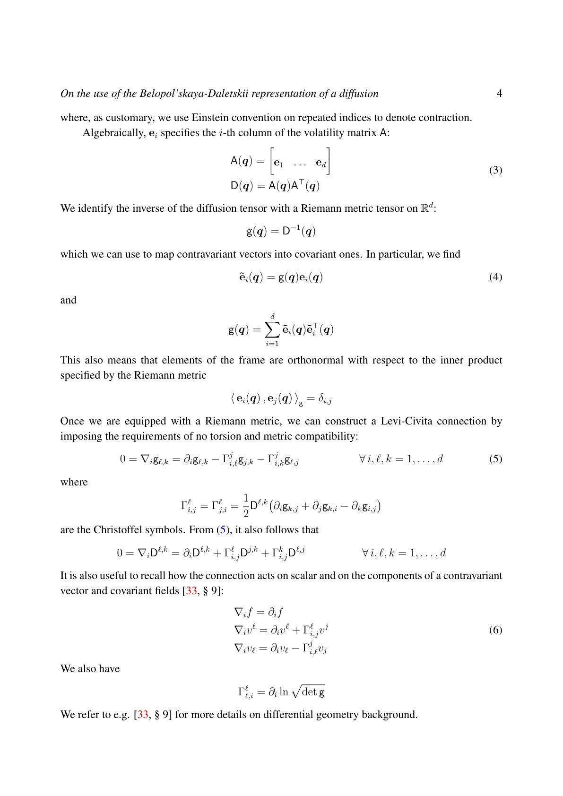
<figcaption class="paper-figure-caption"><b>Fig 3.</b> Low-resolution page preview, page 4</figcaption>
</figure>
<figure class="paper-figure-card">
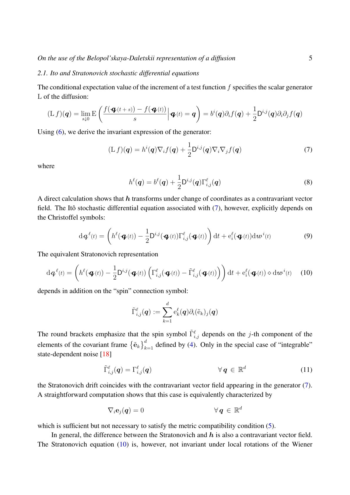
<figcaption class="paper-figure-caption"><b>Fig 4.</b> Low-resolution page preview, page 5</figcaption>
</figure>
<figure class="paper-figure-card">
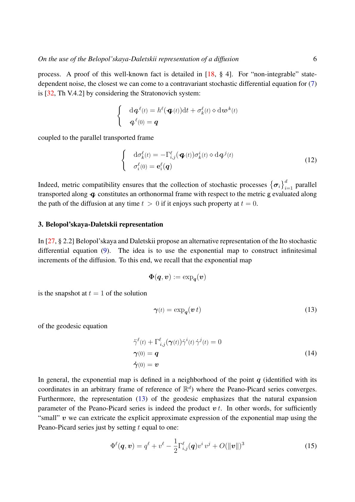
<figcaption class="paper-figure-caption"><b>Fig 5.</b> Low-resolution page preview, page 6</figcaption>
</figure>
</div>

<p><strong>Summary.</strong> This work develops a mathematical framework using the Belopol'skaya-Daletskii representation to analyze diffusion processes on Riemann manifolds. It constructs approximations for the path integral measure by comparing different forms of stochastic differential equations (Itô vs. Stratonovich). The findings provide deep connections between geometric structures, such as curvature, and the statistical mechanics of noisy systems.</p>
<p><strong>Why it may be interesting.</strong> The rigorous handling of stochastic processes on curved manifolds is crucial for non-equilibrium statistical mechanics, especially when modeling open quantum systems or complex fluid dynamics where geometry plays a role.</p>
<details>
<summary>Detailed structure</summary>
<p><strong>Main problem.</strong> The primary goal is constructing equivariant representations of finite-dimensional approximations to the path measure for a diffusion process occurring on a Riemann manifold.</p>
<p><strong>Main result.</strong> The paper derives asymptotic forms for the path integral, showing connections between geometric quantities like curvature and the short-time behavior of the transition density.</p>
<p><strong>Method.</strong> It employs the Belopol'skaya-Daletskii representation of SDEs, utilizing the exponential map to define stochastic increments and compare Itô vs. Stratonovich formulations.</p>
<p><strong>Model / system.</strong> The model is a general diffusion process governed by state-dependent (multiplicative) noise on an abstract Riemann manifold. The dynamics are described by associated Stochastic Differential Equations (SDEs).</p>
<p><strong>Key observables.</strong> The generator of the diffusion, the short-time transition probability kernel $S(	ext{s.t.})$, and the Jacobian factor $J(y_i|y_{i-1})$ in path integral approximations.</p>
<p><strong>Important parameters / regimes.</strong> The noise tensor $D(q)$, the Christoffel symbols $\Gamma^\ell_{i,j}$, and the small time step $\epsilon$ (or large $N$ limit).</p>
<p><strong>Assumptions / limitations.</strong> The analysis proceeds heuristically; it assumes a non-singular volatility and relies on approximations in the path integral formulation.</p>
<p><strong>Figures summary.</strong> Not specified by notes.</p>
<p><strong>Paper structure.</strong> The paper progresses from establishing the SDE forms (Itô vs. Stratonovich) using the Belopol'skaya-Daletskii formalism, to deriving short-time asymptotics for the transition kernel via quadratic variation identities, and finally approximating the full path integral in the large $N$ limit.</p>
</details>
<details>
<summary>Abstract</summary>
<p>We show that the Belopol'skaya-Daletskii formulation of stochastic differential equations on a Riemann manifold offers an elementary way to construct equivariant representations of finite-dimensional approximations to the path measure of a diffusion. The key ingredient is the use of the exponential map to describe increments of the diffusion.</p>
</details>
<p><sub><a href="#top">↑ back to top</a></sub></p>

<p><a id="paper-2607.17997"></a></p>
<h3 id="stripe-order-altermagnetism"><a href="http://arxiv.org/abs/2607.17997v1">Stripe-Order Altermagnetism</a></h3>
<p><strong>Authors:</strong> Zheng-Yang Zhuang, Zhongbo Yan<br>
<strong>Type:</strong> theory · <strong>Category:</strong> strongly correlated electrons · <strong>PDF:</strong> <a href="https://arxiv.org/pdf/2607.17997v1">https://arxiv.org/pdf/2607.17997v1</a><br>
<strong>Analysis basis:</strong> full PDF text, analyzed in chunks
<strong>Topic relevance:</strong> <code>exotic spin models in light-matter</code> <strong>3/5</strong> · <code>spintronics-quantum-optics interface</code> <strong>3/5</strong> · <code>analog quantum simulation</code> <strong>2/5</strong> · <code>Keldysh / 2PI / non-Gaussian methods</code> <strong>1/5</strong></p>
<div class="figure-strip-hint">↔ Scroll figures horizontally</div>
<div class="paper-figures-scroll">
<figure class="paper-figure-card">
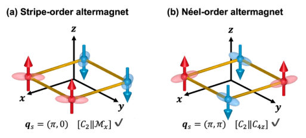
<figcaption class="paper-figure-caption"><b>Fig 1.</b> FIG. 1. Real-space comparison of (a) stripe-order and (b) N´eel- order altermagnets. Red and blue arrows denote opposite local mo- ments, and translucent lobes represent anisotropic orbital densities. The stripe and N´eel domains have ordering vectors qs = (π, 0) and qs = (π, π), respectively. For the spin patterns alone, the N´eel geometry admits spin-reversing mirror [C2∥Mi] and rotational [C2∥Cn] relations, whereas the ferromagnetic-chain geometry of stripe order naturally admits a mirror relation between chains carry- ing opposite moments. Orbital order selects which relations remain symmetries of the full spin-orbital pattern.</figcaption>
</figure>
<figure class="paper-figure-card">
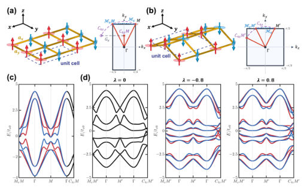
<figcaption class="paper-figure-caption"><b>Fig 2.</b> FIG. 2. Stripe-altermagnetic models and spin-resolved band struc- tures. (a) Minimal model and its reduced Brillouin zone. (b) Buck- led stripe-spin/N´eel-τx-orbital model and its reduced Brillouin zone. The labels MxM and C4zM denote the images of M under the cor- responding operations, and Gx = π is the reciprocal-lattice period along x. Panels (c) and (d) show spin-resolved bands along the paths in (a) and (b), respectively. In (d), the spectra from left to right cor- respond to λ = 0, −0.8, +0.8. Finite λ activates the spin splitting, and λ →−λ reverses its pattern. Red and blue denote opposite spins, whereas black denotes spin-degenerate bands. The opposite- spin bands are related by...</figcaption>
</figure>
<figure class="paper-figure-card">
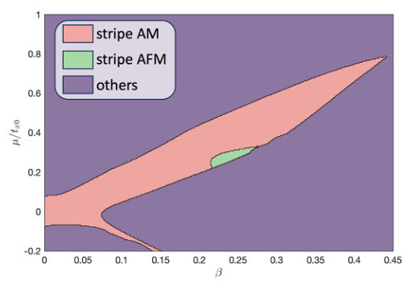
<figcaption class="paper-figure-caption"><b>Fig 3.</b> FIG. 3. RPA leading-instability diagram as a function of the chemi- cal potential µ/tx0 and hopping anisotropy β ≡ty0/tx0 = ty1/tx1. The onsite Hubbard interactions in the spin and orbital channels are fixed at Us/tx0 = 2.7 and Uo/tx0 = 2.8, respectively. The label “stripe AM” denotes the stripe AM phase of the minimal model, whereas “stripe AFM” denotes a stripe AFM phase with spin- degenerate bands that does not belong to the anti-AM class. The la- bel “others” collects parameter points for which at least one active channel has its global maximum outside the set {Γq, Xq, Yq, Mq}. Parameters: {tx0, tx1, td0, td1} = {1, 0.2, 0.4, 0.3}.</figcaption>
</figure>
<figure class="paper-figure-card">
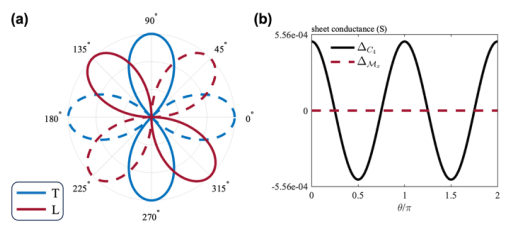
<figcaption class="paper-figure-caption"><b>Fig 4.</b> FIG. 4. Drude spin-current response and symmetry probe for the mirror-selected stripe altermagnet. (a) Normalized longitudinal (L) and transverse (T) charge-equivalent spin conductances for E = E(cos θ, sin θ). Solid and dashed curves denote opposite signs. (b) Spin-resolved diagnostics: the C4z-rotated difference is finite, while the [C2∥Mx] mirror residual vanishes. Parameters: tx0 = 0.35 eV, tx1 = 0.1225 eV, ty0 = 0.0875 eV, ty1 = 0.042 eV, td0 = 0.077 eV, td1 = 0.063 eV, J = 0.14 eV, δx = 0.105 eV.</figcaption>
</figure>
</div>

<p><strong>Summary.</strong> This work introduces and theoretically characterizes 'stripe-order altermagnetism,' a novel class of magnetically ordered state distinct from conventional types because it is governed by mirror symmetry rather than rotational symmetry. Using two-orbital models and RPA, the authors show that this state exhibits unique nematic spin splitting and provides measurable transport signatures related to its underlying symmetry protection.</p>
<p><strong>Why it may be interesting.</strong> While focused on condensed matter magnetism, the detailed symmetry analysis (mirror vs. rotation) provides a rigorous framework for classifying exotic quantum states that could inform theoretical approaches in AMO physics concerning parity constraints in superconducting or magnetic materials.</p>
<details>
<summary>Detailed structure</summary>
<p><strong>Main problem.</strong> To establish and classify 'stripe-order altermagnetism' (AM), distinguishing it from conventional rotation-based altermagnets.</p>
<p><strong>Main result.</strong> Stripe AM is governed by a spin-reversing mirror symmetry, leading to unique nematic spin splitting and potentially supporting ferroelectric-like electrical control of spin splitting.</p>
<p><strong>Method.</strong> The study employs two-orbital models analyzed using Random-Phase Approximation (RPA) calculations combined with detailed symmetry analysis.</p>
<p><strong>Model / system.</strong> The model uses a 2D square lattice Hamiltonian involving two orbitals and stripe spin order, allowing for the interplay between spin and orbital degrees of freedom.</p>
<p><strong>Key observables.</strong> Purely transverse Drude spin current response ($\sigma_s$) and specific symmetry probes like $\Delta M_x(	heta)$ that confirm mirror-based symmetry.</p>
<p><strong>Important parameters / regimes.</strong> The system is predicted to be favored near half filling under strong hopping anisotropy, and the control mechanism involves an electrostatic potential imbalance ($\lambda
ho_z$).</p>
<p><strong>Assumptions / limitations.</strong> The realization of Stripe AM requires breaking certain symmetries (lacking $ ext{C}_2\parallel P$ and $  ext{C}_2\parallel t$) while preserving a spin-reversing mirror symmetry.</p>
<p><strong>Figures summary.</strong> Figures compare real-space patterns between stripe-order and Néel-order altermagnets, illustrating how opposite-spin bands are related by a mirror ($  ext{C}_2\parallel M_x$) rather than a rotation.</p>
<p><strong>Paper structure.</strong> The paper establishes the theoretical framework for Stripe AM based on symmetry breaking via orbital order, derives the Hamiltonian using two-orbital models, predicts favored phases via RPA, and finally analyzes transport diagnostics related to mirror symmetry.</p>
</details>
<details>
<summary>Abstract</summary>
<p>Altermagnetism combines compensated magnetic order with nonrelativistic spin splitting, yet established mechanisms predominantly rely on spin-reversing rotations in Néel-order antiferromagnets. Here we establish stripe-order altermagnetism governed instead by a spin-reversing mirror, placing it outside the usual rotation-based $l$-wave classification. Using two-orbital models, we show that the interplay of stripe spin and orbital orders yields two phases: a stripe altermagnet with mirror-selected nematic spin splitting and a stripe anti-altermagnet with spin-degenerate bands. The latter can support ferroelectric-like electrical control of spin splitting in suitable buckled structures. Random-phase-approximation (RPA) calculations show that stripe-order altermagnetism is favored near half filling under strong hopping anisotropy. The spin-reversing mirror further enforces a purely transverse spin current for an electric field parallel or normal to the mirror plane, providing a direct transport diagnostic.</p>
</details>
<p><sub><a href="#top">↑ back to top</a></sub></p>

<p><a id="paper-2607.16415"></a></p>
<h3 id="math930math-model-on-a-square-lattice-from-altermagnet-to-columnar-antiferromagnet-via-quantum-disordered-phase"><a href="http://arxiv.org/abs/2607.16415v1">$J_{1} - J_{2} - δ$ model on a square lattice: From Altermagnet to Columnar antiferromagnet via quantum disordered phase</a></h3>
<p><strong>Authors:</strong> Subharthi Paul, Darshan G. Joshi<br>
<strong>Type:</strong> theory · <strong>Category:</strong> strongly correlated electrons · <strong>PDF:</strong> <a href="https://arxiv.org/pdf/2607.16415v1">https://arxiv.org/pdf/2607.16415v1</a><br>
<strong>Analysis basis:</strong> full PDF text, analyzed in chunks
<strong>Topic relevance:</strong> <code>analog quantum simulation</code> <strong>3/5</strong> · <code>exotic spin models in light-matter</code> <strong>3/5</strong> · <code>Keldysh / 2PI / non-Gaussian methods</code> <strong>1/5</strong> · <code>driven-dissipative phase transition</code> <strong>1/5</strong></p>
<div class="figure-strip-hint">↔ Scroll figures horizontally</div>
<div class="paper-figures-scroll">
<figure class="paper-figure-card">
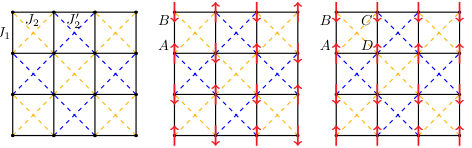
<figcaption class="paper-figure-caption"><b>Fig 1.</b> FIG. 1. (a) Figure showing the exchange interactions de- scribed in model in Eq. (1). Black bonds are NN interactions with strength J1, while yellow and blue bonds are NNN inter- actions with strength J2 = λJ(1 + δ) and J′ 2 = λJ(1 −δ) re- spectively. (b) Classical spin orientation in Néel/Altermagnet phase with A and B being the two sublattices. This state is the starting point for the spin-wave expansion for λ ≤0.5. (c) Classical spin orientation in the Columnar phase with A, B, C and D being the four sublattices. This state is the starting point for the spin-wave expansion for λ &gt; 0.5.</figcaption>
</figure>
<figure class="paper-figure-card">
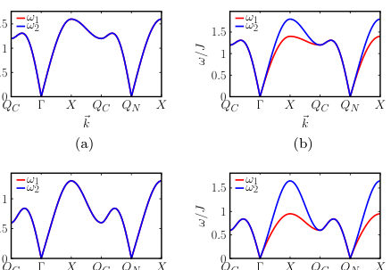
<figcaption class="paper-figure-caption"><b>Fig 2.</b> FIG. 2. Magnon dispersion in the Altermagnet/Néel phase. (a) δ = 0, λ = 0.2, (b) δ = 0.5, λ = 0.2, (c) δ = 0, λ = 0.35, (d) δ = 0.5, λ = 0.35. At δ = 0, there is no magnon band splitting and the phase is the standard Néel phase. For any δ ̸= 0 there is a splitting of magnon bands, as can be see in plots (b) and (d).</figcaption>
</figure>
<figure class="paper-figure-card">
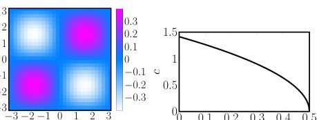
<figcaption class="paper-figure-caption"><b>Fig 3.</b> FIG. 3. (a) Magnon band splitting, δω⃗k, (Eq. 15) for λ = 0.2 and δ = 0.5. (b) Spin-wave velocity, Eq. (16), in the AM phase as a function of λ. As noted in the text, this is independent of δ.</figcaption>
</figure>
<figure class="paper-figure-card">
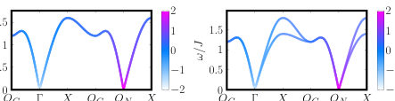
<figcaption class="paper-figure-caption"><b>Fig 4.</b> FIG. 5. Dynamic spin structure factor (Eq. (21)) in AM phase is plotted for different parameters. (a) δ = 0,λ = 0.2; (b) δ = 0.5,λ = 0.2. At δ = 0 the magnon modes are degener- ate while they split for δ ̸= 0. Moreover, the spectral weight is peaked at ⃗QN = (π, π), as expected for AM order on the square lattice.</figcaption>
</figure>
<figure class="paper-figure-card">
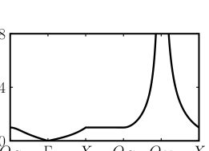
<figcaption class="paper-figure-caption"><b>Fig 5.</b> FIG. 6. Spectral weight in the dynamic structure factor in the AM phase at λ = 0.2, δ = 0.5.</figcaption>
</figure>
</div>

<p><strong>Summary.</strong> This work analyzes a Heisenberg model on a square lattice incorporating two types of frustrating second-neighbor interactions. Using Linear Spin-Wave Theory, the authors map out a phase diagram revealing three distinct magnetic phases: Altermagnet, Columnar Antiferromagnet, and an intermediate Quantum Disordered Phase. The findings quantify how quantum fluctuations stabilize this disordered region as frustration increases.</p>
<p><strong>Why it may be interesting.</strong> While focused on magnetism, the detailed study of quantum phase transitions driven by geometric frustration ($\delta$) and the emergence of a disordered state provides general theoretical tools applicable to strongly correlated electron systems where competing interactions are common.</p>
<details>
<summary>Detailed structure</summary>
<p><strong>Main problem.</strong> The study investigates the stability of altermagnetism against quantum fluctuations induced by magnetic frustration, mapping out the phase diagram connecting different magnetic states.</p>
<p><strong>Main result.</strong> The model exhibits three distinct phases—Altermagnet (AM), Columnar Antiferromagnet (CAF), and a Quantum Disordered Phase (QDP)—whose relative stability is controlled by frustration parameters ($\delta$).</p>
<p><strong>Method.</strong> Linear Spin-Wave Theory (LSWT) is employed to calculate ground-state energies, magnon dispersions, and order parameters for the various magnetic phases.</p>
<p><strong>Model / system.</strong> The system is a Heisenberg model on a square lattice with nearest-neighbor ($J$) and two types of second-neighbor frustrating interactions ($J_2$ and $J'_2$), parameterized by $\lambda$ and $\delta$.</p>
<p><strong>Key observables.</strong> Magnon dispersion ($\omega_{1,2}$), order parameters ($   ext{m}<em ext_CAF="ext{CAF">N$, $    ext{m}</em>, \omega)$).}}$), static/dynamic structure factors ($S(\vec{k</p>
<p><strong>Important parameters / regimes.</strong> Frustration parameter $\delta = (J_2 - J'_2)/(J_2 + J'_2) \in [0, 1]$ and interaction strength ratio $\lambda = (J_2 + J'_2)/(2J)$.</p>
<p><strong>Assumptions / limitations.</strong> The analysis relies on the large-$S$ limit approximation inherent to Linear Spin-Wave Theory.</p>
<p><strong>Figures summary.</strong> Figures illustrate magnon dispersion splitting ($\delta\omega_{\vec{k}}$) for AM, show phase stability regions in a $\lambda-\delta$ diagram (Fig. 13), and plot order parameters ($m_{CAF}$) vs. frustration parameters.</p>
<p><strong>Paper structure.</strong> The paper systematically analyzes the Hamiltonian across different parameter regimes, calculating observables like magnon spectra and order parameters to map out the transition between Néel/AM, CAF, and QDP phases.</p>
</details>
<details>
<summary>Abstract</summary>
<p>Altermagnetism in the case of local-moment magnets is characterized by zero net magnetization and splitting of opposite chirality magnon bands in the absence of any spin-anisotropic interactions or external field. In this work we investigate the robustness of altermagnets against quantum fluctuations arising from magnetic frustration. We consider a Heisenberg model on a square lattice with two different types of second-neighbor interactions, as in a checkboard pattern, in addition to the nearest-neighbor interaction. This model continuously interpolates between the $J_{1}-J_{2}$ Heisenberg model on the square lattice and the Heisenberg model on the checkerboard lattice. For weaker second-neighbor interactions a Néel-type altermagnet phase is realized. On the other hand, for stronger second-neighbor interactions a columnar antiferromagnet emerges. Using linear spin-wave theory we calculate the magnon dispersion, order parameter, static and dynamical structure factors for the two magnetic phases. Further, we show that there is an intermediate quantum disordered phase separating the two magnetic phases, which is connected to the one realized in the $J_{1}-J_{2}$ model. The quantum disordered region is further stabilized as we tune towards the checkerboard lattice limit.</p>
</details>
<p><sub><a href="#top">↑ back to top</a></sub></p>

<p><a id="paper-2607.17549"></a></p>
<h3 id="universal-jamming-criticality-and-self-organizing-principles-from-disorder-to-the-limit-of-perfect-crystalline-order"><a href="http://arxiv.org/abs/2607.17549v1">Universal Jamming Criticality and Self-Organizing Principles from Disorder to the Limit of Perfect Crystalline Order</a></h3>
<p><strong>Authors:</strong> Jianhua Zhang, Jiaqi Si, Ning Xu, Hua Tong<br>
<strong>Type:</strong> theory · <strong>Category:</strong> statistical mechanics · <strong>PDF:</strong> <a href="https://arxiv.org/pdf/2607.17549v1">https://arxiv.org/pdf/2607.17549v1</a><br>
<strong>Analysis basis:</strong> full PDF text, analyzed in chunks
<strong>Topic relevance:</strong> <code>non-equilibrium universality</code> <strong>3/5</strong> · <code>driven-dissipative phase transition</code> <strong>2/5</strong> · <code>non-equilibrium dynamics</code> <strong>2/5</strong> · <code>Frenkel-Kontorova</code> <strong>1/5</strong></p>
<div class="figure-strip-hint">↔ Scroll figures horizontally</div>
<div class="paper-figures-scroll">
<figure class="paper-figure-card">
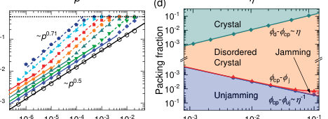
<figcaption class="paper-figure-caption"><b>Fig 1.</b> FIG. 1: Jamming criticality in solids from order to disorder. Pressure dependence of (a) the excess coordination number ∆Z and (b) the modulus ratio G/B for varied polydispersity η. Horizontal dotted lines indicate crystal behavior. Dashed and solid lines denote intermediate scalings (∆Z ∼p0.83, G/B ∼p0.71) and jamming scalings (∆Z ∼p0.5, G/B ∼p0.5), respectively. Crossover pressures pd and pj are determined by intersections of different scaling relations. (c) Phase diagram in (η, p) space. Three regions with distinct mechanical be- haviors are identified, separated by pd ∼η (green line) and pj ∼η2.5 (red line). Error bars indicate uncertainty of cros- sover pressures determined by ∆Z and...</figcaption>
</figure>
<figure class="paper-figure-card">
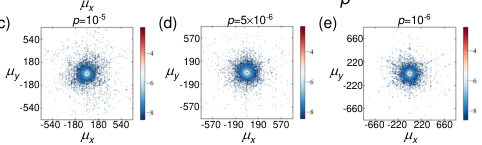
<figcaption class="paper-figure-caption"><b>Fig 2.</b> FIG. 2: Nonaffinity in solids from order to disorder. (a)-(e) Probability distribution of normalized nonaffine deformation p(µx, µy) for η = 10−2 with decreasing pressures. (f) Six-fold anisotropy C6 of p(µx, µy) versus pressure p for different η. Arrows indicate pj, below which the system is controlled by jamming criticality.</figcaption>
</figure>
<figure class="paper-figure-card">
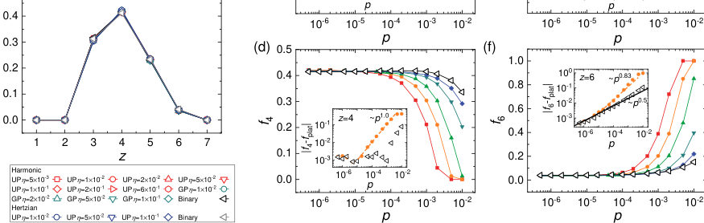
<figcaption class="paper-figure-caption"><b>Fig 3.</b> FIG. 3: Universal coordination-number distribution in marginally jammed solids. (a) Representative configurations at p = 10−6</figcaption>
</figure>
</div>

<p><strong>Summary.</strong> This work investigates how mechanical rigidity emerges universally across disordered solids by tuning structure from crystalline to amorphous. The authors demonstrate that jamming criticality dictates mechanical behavior regardless of particle-level details, suggesting a fundamental decoupling from glass transition physics. They achieve this through detailed simulations analyzing coordination number statistics and structural fluctuations.</p>
<p><strong>Why it may be interesting.</strong> While focused on classical mechanics, the concept of universal critical scaling near a jamming transition shares mathematical parallels with phase transitions studied in statistical mechanics, particularly concerning emergent order from disorder.</p>
<details>
<summary>Detailed structure</summary>
<p><strong>Main problem.</strong> To understand the universal underlying characteristics governing mechanical rigidity (jamming criticality) in amorphous solids by systematically tuning structural order from crystalline to fully disordered states.</p>
<p><strong>Main result.</strong> Mechanical properties are universally governed by jamming criticality, suggesting a fundamental decoupling between this critical behavior and the physics of the glass transition. Universal coordination-number distributions and contact hyperuniformity emerge independent of particle structure.</p>
<p><strong>Method.</strong> Systematic simulation of jammed elastic packings across varying structural disorder (polydispersity) using quasi-static densification methods.</p>
<p><strong>Model / system.</strong> Jammed elastic packings of frictionless particles in 2D and 3D, modeled with harmonic or Hertzian repulsion. The study spans the entire order-disorder spectrum from perfect crystals to fully disordered states.</p>
<p><strong>Key observables.</strong> Excess coordination number ($\Delta Z$), modulus ratio ($G/B$), nonaffine deformation anisotropy ($C_6$), universal coordination-number distribution ($f_z$), and contact hyperuniformity measures ($\sigma^2_Z(L)$, $S_Z(q)$).</p>
<p><strong>Important parameters / regimes.</strong> Polydispersity ($\eta$) controls structural disorder, and pressure ($p$) tunes the system state relative to jamming transitions ($p_j$).</p>
<p><strong>Assumptions / limitations.</strong> The study focuses on zero-temperature jamming; finite-disorder thresholds separating crystal and jamming behaviors are challenged by the results.</p>
<p><strong>Figures summary.</strong> Figures illustrate phase diagrams showing distinct regimes (Crystal, Disordered Crystal, Jamming Critical) based on pressure and polydispersity. Other figures compare universal scaling laws for coordination number fluctuations and structure factors across different disorder levels.</p>
<p><strong>Paper structure.</strong> The paper systematically analyzes the mechanical response by varying structural order ($\eta$) while measuring key observables like $\Delta Z$ and $G/B$, establishing three distinct mechanical regimes, before delving into microscopic diagnostics like nonaffine elasticity and hyperuniformity to prove universality.</p>
</details>
<details>
<summary>Abstract</summary>
<p>While crystals are defined by periodic order, the nature of amorphous solids remains elusive due to their disordered, diverse, and nonequilibrium structures. Here, we focus on jammed elastic packings and systematically tune structure from crystalline to fully disordered to unveil the universal underlying characteristics. We demonstrate that their mechanical properties are universally governed by jamming criticality, featuring characteristic scaling behaviors near the jamming transition, excepting the singular close-packed point. This is facilitated by random nonaffine elasticity arising from contact-level disorder. Consequently, the jamming density can approach close packing, suggesting a fundamental decoupling between jamming criticality and the glass transition physics. Moreover, we uncover a universal coordination-number distribution and contact hyperuniformity in marginally jammed states, independent of particle-level structure. These findings suggest a general organizing mechanism for emergent rigidity in disordered solids, underscore the broad relevance of jamming physics, and complement principles of mechanical self-organization.</p>
</details>
<p><sub><a href="#top">↑ back to top</a></sub></p>

<p><a id="paper-2607.16399"></a></p>
<h3 id="eddy-currents-and-current-reversal-in-curved-magnetic-thin-film-josephson-junctions"><a href="http://arxiv.org/abs/2607.16399v1">Eddy currents and current reversal in curved magnetic thin-film Josephson junctions</a></h3>
<p><strong>Authors:</strong> Einar Skoglund, Maxim A. Tjøtta, Sol H. Jacobsen<br>
<strong>Type:</strong> theory · <strong>Category:</strong> other · <strong>PDF:</strong> <a href="https://arxiv.org/pdf/2607.16399v1">https://arxiv.org/pdf/2607.16399v1</a><br>
<strong>Analysis basis:</strong> full PDF text, analyzed in chunks
<strong>Topic relevance:</strong> <code>Keldysh / 2PI / non-Gaussian methods</code> <strong>3/5</strong> · <code>non-equilibrium dynamics</code> <strong>2/5</strong> · <code>methods for driven-dissipative</code> <strong>1/5</strong> · <code>spintronics-quantum-optics interface</code> <strong>1/5</strong></p>
<div class="figure-strip-hint">↔ Scroll figures horizontally</div>
<div class="paper-figures-scroll">
<figure class="paper-figure-card">
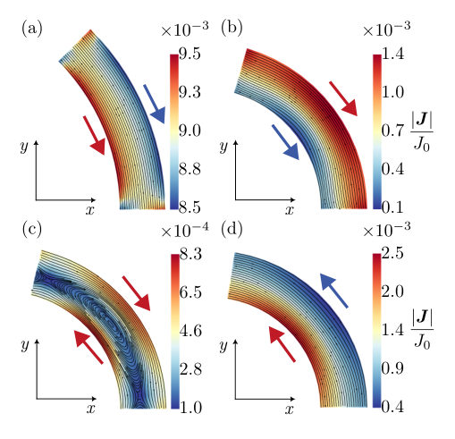
<figcaption class="paper-figure-caption"><b>Fig 1.</b> FIG. 1. Charge current density Eq. (3) in an annular sector ferromag- net. The arrows indicate direction and relative magnitude on the inner and outer boundaries. Panels (a)-(d) correspond to κL/π = 0.250, 0.410, 0.425 and 0.450, respectively.</figcaption>
</figure>
<figure class="paper-figure-card">
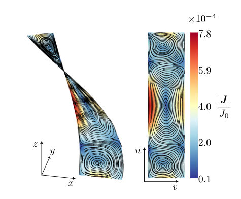
<figcaption class="paper-figure-caption"><b>Fig 2.</b> FIG. 2. Charge current density in a helicoidal ferromagnet shown in physical space (left) and in the parameter space (u, v) (right). Parameters are κ = 0.5π/L and τ = 0.7π/L.</figcaption>
</figure>
</div>

<p><strong>Summary.</strong> This work develops a generalized Green's function theory to model superconducting current flow in Josephson junctions built on curved magnetic thin films. By incorporating the geometry into the Usadel equation via tensorial calculus, the authors demonstrate that curvature directly controls the supercurrent density, leading to predictable eddy currents and current reversals. This provides a powerful theoretical tool for understanding how nanoscale geometric confinement dictates quantum transport phenomena.</p>
<p><strong>Why it may be interesting.</strong> While focused on superconductivity, the rigorous application of differential geometry (Christoffel symbols, covariant derivatives) to derive physical transport laws provides a powerful theoretical toolkit applicable to any system where geometric constraints dictate quantum dynamics or energy flow.</p>
<details>
<summary>Detailed structure</summary>
<p><strong>Main problem.</strong> The research investigates how geometric curvature influences superconducting transport, specifically focusing on induced eddy currents and current reversals in Josephson junctions formed by curved magnetic thin films.</p>
<p><strong>Main result.</strong> Curvature effects introduce a geometrically driven component to the supercurrent density via non-zero Christoffel symbols, leading to controllable manipulation of current pathways and observable current reversals.</p>
<p><strong>Method.</strong> The authors generalize the quasiclassical Green's function theory (Usadel equation) using tensorial calculus adapted for arbitrarily curved surfaces. They analyze transport in the weak proximity limit.</p>
<p><strong>Model / system.</strong> The system is a Josephson junction involving superconducting leads separated by a ferromagnetic thin film whose geometry can be described as an annular sector or a helicoid. The physics is modeled via the Usadel equation solved on curved manifolds.</p>
<p><strong>Key observables.</strong> Charge current density (J), decomposition of triplet components ($J^{(s)}$ and $J^{(t)}$), eddy currents, and Christoffel symbols ($\Gamma^l_{ij}$).</p>
<p><strong>Important parameters / regimes.</strong> Curvature ($\kappa$), torsion ($ au$), proximity coupling strength ($f$), and the ratio of characteristic lengths to coherence length ($\xi$).</p>
<p><strong>Assumptions / limitations.</strong> The analysis primarily uses the weak proximity limit ($f \ll 1$) for simplification, and superconducting leads are treated as bulk, conventional s-wave superconductors.</p>
<p><strong>Figures summary.</strong> Figures illustrate charge current density in annular sectors showing current reversal with increasing curvature ($\kappa$), and complex eddy current patterns in helicoidal strips involving both curvature and torsion.</p>
<p><strong>Paper structure.</strong> The paper develops a generalized tensorial framework for the Usadel equation on curved surfaces, derives expressions for geometrically induced currents based on Christoffel symbols, and applies this formalism to specific geometries (annular/helicoid) to predict current reversals and eddy currents.</p>
</details>
<details>
<summary>Abstract</summary>
<p>Real-space geometric curvature in magnetic thin films introduces a controllable mechanism for tailoring the pathways of superconducting steady-state Josephson currents via the proximity effect. We present a generalized Green's function method for calculating diffusive transport in arbitrarily curved surfaces, and show how the competing mechanisms of curvature and distance regulate conversion between different superconducting pairings in a proximity-coupled ferromagnet. We show how this dictates the distribution of current density, with the possibility of curvature-controlled current density manipulation, induced eddy currents and current reversal.</p>
</details>
<p><sub><a href="#top">↑ back to top</a></sub></p>

<p><a id="paper-2607.18032"></a></p>
<h3 id="frsb-in-the-sk-spin-glass-convergence-to-full-interval-support-at-zero-temperature"><a href="http://arxiv.org/abs/2607.18032v1">FRSB in the SK spin glass: convergence to full-interval support at zero temperature</a></h3>
<p><strong>Authors:</strong> Hong-Bin Chen<br>
<strong>Type:</strong> theory · <strong>Category:</strong> disordered systems and neural networks · <strong>PDF:</strong> <a href="https://arxiv.org/pdf/2607.18032v1">https://arxiv.org/pdf/2607.18032v1</a><br>
<strong>Analysis basis:</strong> full PDF text, analyzed in chunks
<strong>Topic relevance:</strong> <code>Keldysh / 2PI / non-Gaussian methods</code> <strong>3/5</strong> · <code>analog quantum simulation</code> <strong>1/5</strong> · <code>driven-dissipative phase transition</code> <strong>1/5</strong> · <code>exotic spin models in light-matter</code> <strong>1/5</strong> · <code>methods for driven-dissipative</code> <strong>1/5</strong></p>
<div class="figure-strip-hint">↔ Scroll figures horizontally</div>
<div class="paper-figures-scroll">
<figure class="paper-figure-card">
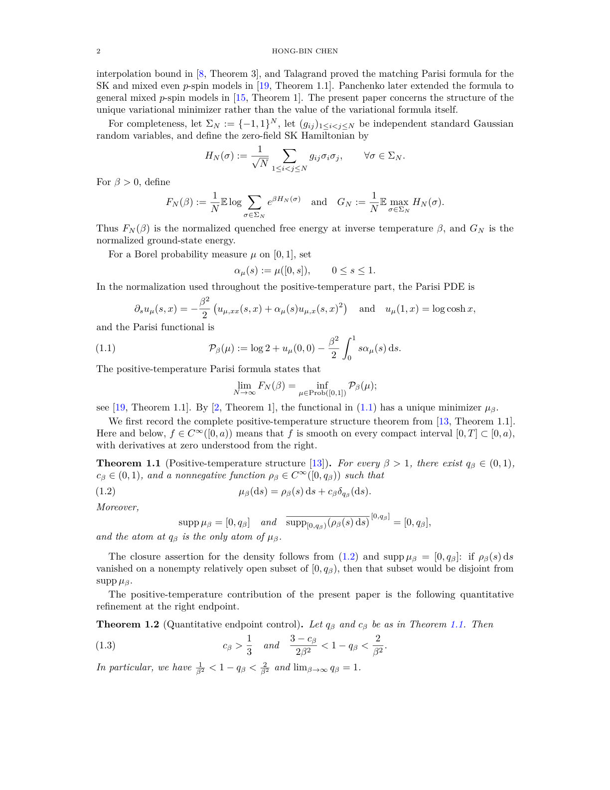
<figcaption class="paper-figure-caption"><b>Fig 1.</b> Low-resolution page preview, page 2</figcaption>
</figure>
<figure class="paper-figure-card">
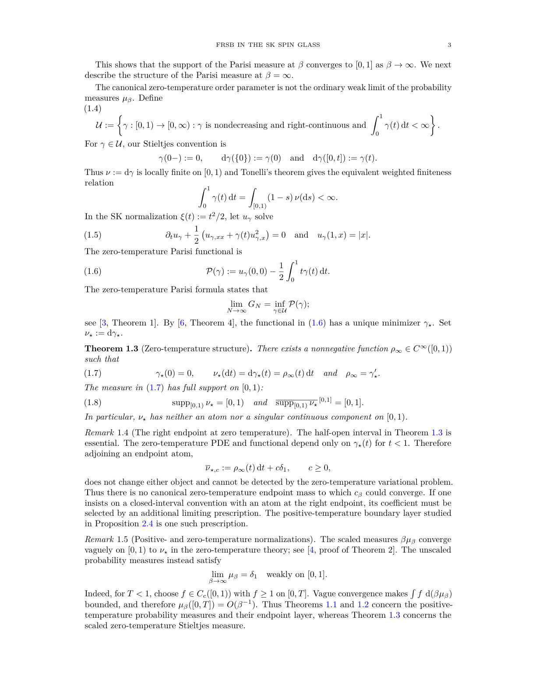
<figcaption class="paper-figure-caption"><b>Fig 2.</b> Low-resolution page preview, page 3</figcaption>
</figure>
<figure class="paper-figure-card">
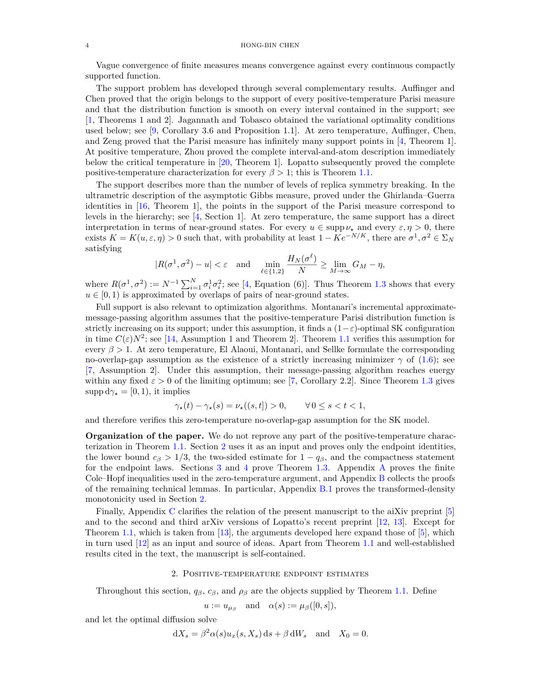
<figcaption class="paper-figure-caption"><b>Fig 3.</b> Low-resolution page preview, page 4</figcaption>
</figure>
<figure class="paper-figure-card">
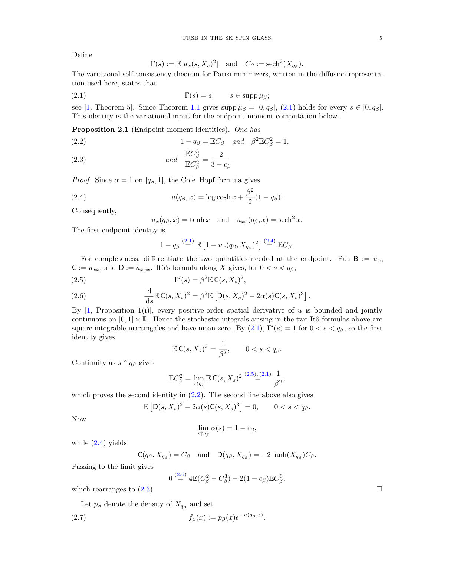
<figcaption class="paper-figure-caption"><b>Fig 4.</b> Low-resolution page preview, page 5</figcaption>
</figure>
<figure class="paper-figure-card">
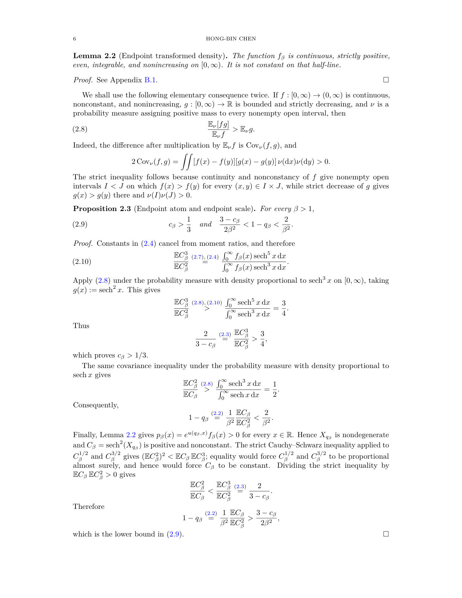
<figcaption class="paper-figure-caption"><b>Fig 5.</b> Low-resolution page preview, page 6</figcaption>
</figure>
</div>

<p><strong>Summary.</strong> This paper rigorously proves that the Sherrington-Kirkpatrick spin glass model exhibits full replica symmetry breaking at zero temperature. By analyzing the Parisi measure, the authors demonstrate that this measure has continuous support across the entire interval [0, 1). This result provides deep mathematical insight into the low-temperature phase structure of mean-field disordered systems.</p>
<p><strong>Why it may be interesting.</strong> While focused on classical spin glasses, the mathematical machinery involving complex functional analysis, convergence theorems for measures, and solving associated PDEs is highly relevant to understanding quantum many-body systems in disordered or frustrated regimes.</p>
<details>
<summary>Detailed structure</summary>
<p><strong>Main problem.</strong> The primary goal is proving full replica symmetry breaking (FRSB) for the Sherrington-Kirkpatrick (SK) spin glass model at zero temperature.</p>
<p><strong>Main result.</strong> The authors prove that at zero temperature, the Parisi measure has full support on the interval [0, 1), and its density function is smooth and non-zero across this entire range.</p>
<p><strong>Method.</strong> The analysis involves developing variational self-consistency theorems for the Parisi functional, utilizing stochastic processes (Itô's formula), and employing advanced PDE techniques to establish regularity and convergence bounds.</p>
<p><strong>Model / system.</strong> The system is the SK spin glass model, characterized by a Hamiltonian involving random Gaussian couplings ($g_{ij}$). The analysis focuses on calculating the normalized quenched free energy and ground-state energy via Parisi measures ($\mu_eta$ or $
u_\star$).</p>
<p><strong>Key observables.</strong> Normalized quenched free energy $F_N(eta)$, the zero-temperature Parisi measure $
u_\star$, and its associated density $
ho_\infty(t)$.</p>
<p><strong>Important parameters / regimes.</strong> Inverse temperature $eta$, which is analyzed in limits approaching infinity ($eta 	o \infty$) and specifically at zero temperature ($T=0$).</p>
<p><strong>Assumptions / limitations.</strong> The analysis builds upon established results for finite $eta$ (Theorem 1.1) and relies on advanced mathematical tools like Gaussian estimates and the assumption of a continuous path parameterization for the $T=0$ functional.</p>
<p><strong>Paper structure.</strong> The paper reviews known finite-$eta$ results before focusing on the core contribution: deriving the structure of the zero-temperature Parisi functional (Theorem 1.3) and proving its full support on [0, 1). The argument flows from general variational principles to specific PDE stability proofs.</p>
</details>
<details>
<summary>Abstract</summary>
<p>We prove full replica symmetry breaking for the zero-field Sherrington-Kirkpatrick model at zero temperature: the Parisi minimizer is absolutely continuous, has a smooth density, and has support $[0,1)$. At inverse temperature $β>1$, [arxiv.org/abs/2607.11756v3] recently proved that the Parisi measure has support $[0,q_β]$. Here, we show $q_β$ converges to $1$ as $β\to\infty$.</p>
</details>
<p><sub><a href="#top">↑ back to top</a></sub></p>

<p><a id="paper-2607.16846"></a></p>
<h3 id="geometric-qubits-in-programmable-atomic-trimers"><a href="http://arxiv.org/abs/2607.16846v1">Geometric Qubits in Programmable Atomic Trimers</a></h3>
<p><strong>Authors:</strong> Julien Garaud, Antti J. Niemi<br>
<strong>Type:</strong> theory · <strong>Category:</strong> quantum information and computing · <strong>PDF:</strong> <a href="https://arxiv.org/pdf/2607.16846v1">https://arxiv.org/pdf/2607.16846v1</a><br>
<strong>Analysis basis:</strong> full PDF text, analyzed in chunks
<strong>Topic relevance:</strong> <code>analog quantum simulation</code> <strong>3/5</strong> · <code>Rydberg arrays</code> <strong>2/5</strong> · <code>entanglement &amp; information structure</code> <strong>1/5</strong> · <code>non-equilibrium dynamics</code> <strong>1/5</strong></p>
<div class="figure-strip-hint">↔ Scroll figures horizontally</div>
<div class="paper-figures-scroll">
<figure class="paper-figure-card">
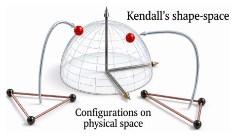
<figcaption class="paper-figure-caption"><b>Fig 1.</b> FIG. 1. Kendall’s space of triangular shapes is a hemisphere, with points identified with a different shape of a triangle up to an overall scale and spatial orientation.</figcaption>
</figure>
<figure class="paper-figure-card">
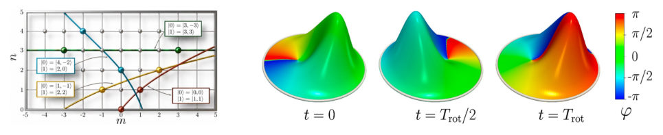
<figcaption class="paper-figure-caption"><b>Fig 2.</b> FIG. 2. The leftmost panel shows Higgs-oscillator lattice states |n, m⟩. Nontrivial relatively stationary states are supported by two lattice points on a support parabola (4). The red parabola, |0, 0⟩↔|1, 1⟩, is the energy minimizer for 0 &lt; ℓ&lt; 1; the yellow curve shows an opposite-chirality minimizer for −1 &lt; ℓ&lt; 2; the blue curve illustrates negative ℓ, and the green line a λJ = 0 degeneracy. The remaining panels display the time evolution of the k = 0, ℓ= 3/4 minimizer (6), where the elevation denotes the density |ψ| and the colormap, the phase arg ψ. The modulus and phase have different periods implying that the time evolution accumulates a geometric phase (7); see Supplemental Material...</figcaption>
</figure>
</div>

<p><strong>Summary.</strong> The authors propose encoding qubits in the collective shape modes of programmable atomic trimers trapped in optical tweezers. By modeling the dynamics using an effective Higgs oscillator Hamiltonian, they demonstrate that the system naturally supports robust two-level qubit subspaces. Furthermore, they outline a method to generate entanglement by exploiting linked geometric cycles within the array structure.</p>
<p><strong>Why it may be interesting.</strong> This work bridges AMO physics (trapped atoms) with quantum information by proposing a novel physical mechanism—geometric phase accumulation in shape degrees of freedom—to realize fundamental quantum gates like CZ.</p>
<details>
<summary>Detailed structure</summary>
<p><strong>Main problem.</strong> The paper develops a theoretical framework to realize robust geometric qubits and entangling gates using programmable arrays of neutral atomic trimers.</p>
<p><strong>Main result.</strong> It shows that the system's shape-space dynamics, modeled by the Higgs oscillator, naturally supports two adjacent extremal states suitable for encoding logical qubits. Entanglement is generated via linked holonomic cycles yielding a controlled-Z gate.</p>
<p><strong>Method.</strong> The analysis uses an exactly solvable shape-space theory derived from the Higgs oscillator Hamiltonian on Kendall's shape sphere to analyze relative stationary states and geometric phase accumulation.</p>
<p><strong>Model / system.</strong> The physical platform is programmable optical-tweezer arrays trapping atomic trimers. The quantum information is encoded in the collective shape modes of these trimers, governed by an effective Hamiltonian derived from dynamics on Kendall's shape sphere.</p>
<p><strong>Key observables.</strong> Geometric phase ($eta_{	ext{geom}}$), energy gaps ($\Delta E$), and the invariant two-qubit phase ($\Phi_{	ext{ent}}$).</p>
<p><strong>Important parameters / regimes.</strong> The spectral lattice structure, detuning ($\delta$), coupling strength ($\Omega$), and geometric parameters defining the linked cycle.</p>
<p><strong>Assumptions / limitations.</strong> The analysis assumes that relative stationarity selects only two modes for qubit encoding, and it relies on projecting dynamics onto a low-dimensional effective Hamiltonian.</p>
<p><strong>Figures summary.</strong> Figures illustrate Kendall's shape space as a hemisphere, visualize the Higgs-oscillator lattice states showing two-point support for qubits, and depict the time evolution of the minimal energy qubit state with geometric phase accumulation.</p>
<p><strong>Paper structure.</strong> The paper progresses from establishing the physical model (atomic trimers on $S^2_K$) to deriving the effective Hamiltonian ($\hat{H}$), analyzing single-qubit control via spectral gaps, and finally extending the theory to generate two-qubit entanglement using linked geometric cycles.</p>
</details>
<details>
<summary>Abstract</summary>
<p>Motivated by programmable tweezer arrays, we develop an exactly solvable shape-space theory for near-equilateral atomic trimers. The Higgs oscillator on Kendall's shape sphere gives a nonresonant spectral lattice whose fixed-angular-momentum relative-stationary minimizers are supported on two adjacent admissible sites. These symmetry-selected doublets are separated from higher relative-stationary branches by a finite branch gap. With phase-coherent shape-mode driving and Rydberg-mediated conditional phases, they furnish a candidate route to geometric qubits and entangling operations.</p>
</details>
<p><sub><a href="#top">↑ back to top</a></sub></p>

<p><a id="paper-2607.16483"></a></p>
<h3 id="bond-reconstruction-and-vacancy-clustering-in-monolayer-silicon-carbide-from-first-principles"><a href="http://arxiv.org/abs/2607.16483v1">Bond reconstruction and vacancy clustering in monolayer silicon carbide from first principles</a></h3>
<p><strong>Authors:</strong> Péter Udvarhelyi<br>
<strong>Type:</strong> theory · <strong>Category:</strong> quantum information and computing · <strong>PDF:</strong> <a href="https://arxiv.org/pdf/2607.16483v1">https://arxiv.org/pdf/2607.16483v1</a><br>
<strong>Analysis basis:</strong> full PDF text, analyzed in chunks
<strong>Topic relevance:</strong> <code>exotic spin models in light-matter</code> <strong>3/5</strong> · <code>spintronics-quantum-optics interface</code> <strong>3/5</strong></p>
<div class="figure-strip-hint">↔ Scroll figures horizontally</div>
<div class="paper-figures-scroll">
<figure class="paper-figure-card">
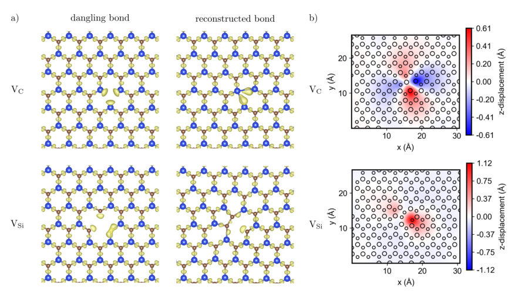
<figcaption class="paper-figure-caption"><b>Fig 1.</b> FIG. 1. Bond reconstruction and out-of-plane distortion in monovacancy defects in monolayer SiC. a) Electron localization function (ELF) at 0.7 isovalue level (yellow) in the VSi and VC defects, comparing dangling and reconstructed bond calculations. The presence of nodal planes and the localization and direction of the lobes differentiate the two cases. Silicon and carbon atoms are illustrated as blue and brown balls, respectively. b) Accompanying out-of-plane distortion after bond reconstruction in VSi and VC defects, respectively. The displacement field is visualized as a heatmap projected onto the monolayer. Atomic sites of silicon and carbon are illustrated as larger and smaller...</figcaption>
</figure>
<figure class="paper-figure-card">
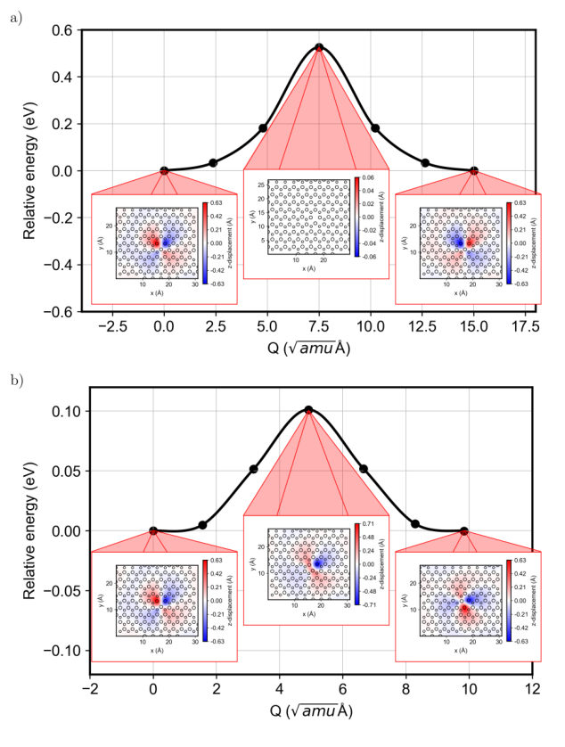
<figcaption class="paper-figure-caption"><b>Fig 2.</b> FIG. 2. Reorientation of the chirality in the VC defect calculated using the climbing image NEB method at the PBE functional level. a) Chirality swap reaction path through an in-plane barrier geometry. b) Chirality swap and rotation through an out-of-plane barrier geometry. Insets show the out-of-plane distortion heatmap projected on the SiC monolayer plane in the corresponding structures along the reaction path.</figcaption>
</figure>
<figure class="paper-figure-card">
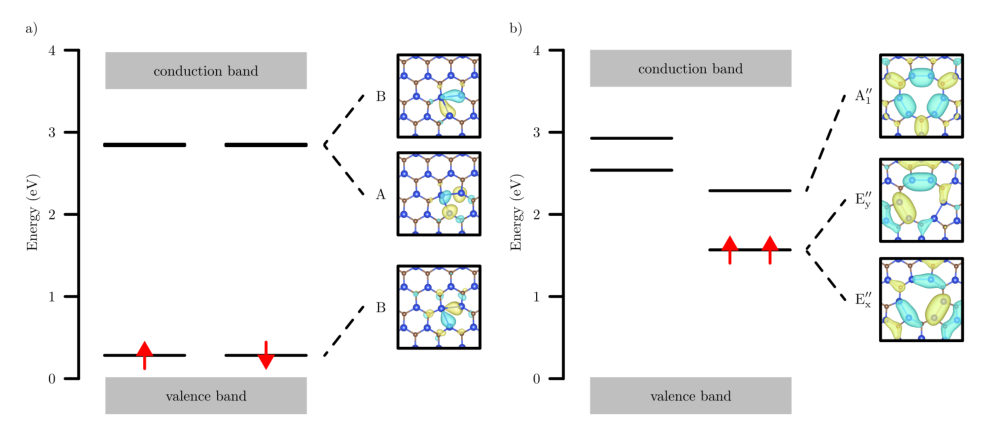
<figcaption class="paper-figure-caption"><b>Fig 3.</b> FIG. 3. Ground state Kohn-Sham level structures in spin-polarized HSE06 calculations in a) the VC and b) the VSi3VC defects. Defect orbitals inside the bandgap are labelled according to the irreducible representations in a) C2 and b) D3h point groups. Insets show the pseudo-wavefunction of the corresponding defect orbitals. Excited states are described via spin-conserving single-electron promotion to the unoccupied levels.</figcaption>
</figure>
<figure class="paper-figure-card">
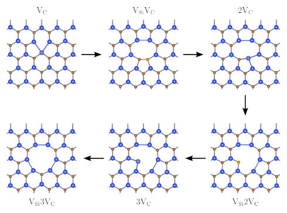
<figcaption class="paper-figure-caption"><b>Fig 4.</b> FIG. 4. Systematic construction of compact vacancy aggre- gate models. Atoms with dangling or frustrated bonds are considered as primary vacancy sites in the models as shown in the 3VC →VSi3VC and VC →VSiVC constructions, respec- tively. For the compact clusters that involve antisite defects, elements are swapped at the edge of the cluster or at recon- structed bonding sites, as illustrated in the VSi2VC →3VC and VSiVC →2VC construction, respectively.</figcaption>
</figure>
<figure class="paper-figure-card">
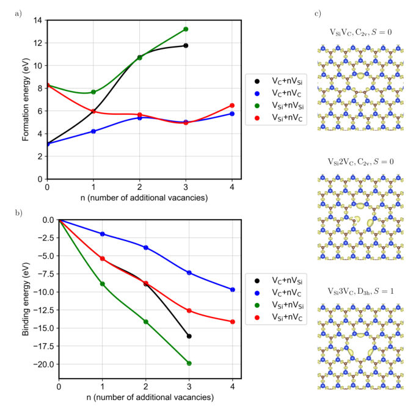
<figcaption class="paper-figure-caption"><b>Fig 5.</b> FIG. 5. Calculated structures of compact vacancy aggregates. a) and b) show the evolution of the formation and binding energies at the PBE level, respectively. Interpolated lines connect the calculation points to guide the eye. c) Geometry and ELF plots of the VSi + nVC series. The ground state point symmetry and spin are labelled for these structures.</figcaption>
</figure>
</div>

<p><strong>Summary.</strong> The research uses first-principles DFT to study how bond reconstruction stabilizes vacancy defects in 2D SiC. It identifies a specific vacancy cluster as an excellent candidate for quantum color centers, characterized by a stable triplet spin state and predictable near-infrared optical emission signatures.</p>
<p><strong>Why it may be interesting.</strong> This work directly addresses defect engineering for solid-state quantum emitters by calculating measurable spectroscopic fingerprints ($ ext{ZFS}$, $    ext{LVMs}$) based on fundamental structural changes (bond reconstruction).</p>
<details>
<summary>Detailed structure</summary>
<p><strong>Main problem.</strong> The study investigates how bond reconstruction mechanisms affect the formation energies, symmetries, and quantum properties of intrinsic defects (monovacancies and aggregates) in monolayer silicon carbide.</p>
<p><strong>Main result.</strong> A specific vacancy aggregate ($    ext{VSi}_3  ext{VC}$) was identified as a promising infrared color-center candidate due to its stable triplet ground state and favorable emission characteristics.</p>
<p><strong>Method.</strong> Density Functional Theory (DFT) calculations, utilizing advanced techniques like $  ext{HSE06}$ hybrid functionals, $   ext{cNEB}$ for relaxation paths, and analysis of hyperfine coupling parameters were employed.</p>
<p><strong>Model / system.</strong> The physical system is monolayer silicon carbide ($ ext{SiC}$) containing various point defects, including single vacancies ($ ext{V}<em ext_C="ext{C">{    ext{Si}}$, $    ext{V}</em>$) and larger vacancy clusters. The calculations model the structural relaxation and electronic state changes upon defect formation.}</p>
<p><strong>Key observables.</strong> Spin ground state ($S=1$ triplet), Zero-Field Splitting ($   ext{ZFS}$) parameter $D$, hyperfine coupling tensors, localized vibration modes ($  ext{LVMs}$), and optical transition energies (near-infrared range).</p>
<p><strong>Important parameters / regimes.</strong> Formation energy ($E_f$), Debye-Waller factor, Huang-Rhys factor ($   ext{HR} \approx 0.59$), and the electronic structure derived from $ ext{HSE06}$ calculations.</p>
<p><strong>Assumptions / limitations.</strong> The primary assumption is that bond reconstruction dictates the final stable quantum state of the defect; approximations are made regarding the calculation of excited states and finite-size corrections for energy levels.</p>
<p><strong>Figures summary.</strong> Figures illustrate out-of-plane displacement patterns, reaction paths showing chirality swapping barriers, ground state Kohn-Sham level structures, and phonon sideband simulations detailing localized vibration modes ($ ext{LVMs}$).</p>
<p><strong>Paper structure.</strong> The paper systematically analyzes isolated monovacancies first, demonstrating symmetry breaking upon reconstruction. It then moves to vacancy aggregates, culminating in the detailed quantum characterization of the $    ext{VSi}_3  ext{VC}$ cluster's optical and spin properties.</p>
</details>
<details>
<summary>Abstract</summary>
<p>Bond reconstruction in vacancy-related structures affects their formation energies, symmetries, and electronic and optical properties. Using density functional theory, we investigate bond reconstruction mechanisms of monovacancies and vacancy aggregates in monolayer silicon carbide. Multiple bond descriptors reveal that isolated monovacancies undergo both in-plane reconstruction and out-of-plane distortion, which together shape their stability and electronic structure. For compact vacancy aggregates, we show that bond reconstruction acts as a key stabilization mechanism. However, in carbon monovacancy, reconstruction suppresses optical activity. In contrast, a highly stable aggregate composed of three carbon vacancies surrounding a silicon vacancy emerges as a promising infrared color-center candidate, combining a triplet ground state with a favorable Debye-Waller factor of the emission. These results highlight the role of bond reconstruction in defining the quantum properties of vacancy defects in two-dimensional silicon carbide.</p>
</details>
<p><sub><a href="#top">↑ back to top</a></sub></p>

<p><a id="paper-2607.17400"></a></p>
<h3 id="broadband-polarization-compensation-with-link-segment-reconstruction-for-quantum-optical-links"><a href="http://arxiv.org/abs/2607.17400v1">Broadband Polarization Compensation with Link Segment Reconstruction for Quantum Optical Links</a></h3>
<p><strong>Authors:</strong> Qingyu Shi, Erwan Trad, Julien Chénedé, Tobias Vogl<br>
<strong>Type:</strong> experiment · <strong>Category:</strong> quantum information and computing · <strong>PDF:</strong> <a href="https://arxiv.org/pdf/2607.17400v1">https://arxiv.org/pdf/2607.17400v1</a><br>
<strong>Analysis basis:</strong> full PDF text, analyzed in chunks
<strong>Topic relevance:</strong> <code>quantum optics experiment</code> <strong>3/5</strong> · <code>QC/QI experiment</code> <strong>1/5</strong> · <code>interference shaping light</code> <strong>1/5</strong> · <code>quantum measurements</code> <strong>1/5</strong></p>
<div class="figure-strip-hint">↔ Scroll figures horizontally</div>
<div class="paper-figures-scroll">
<figure class="paper-figure-card">

<figcaption class="paper-figure-caption"><b>Fig 1.</b> FIG. 1. Experimental setup. In the present implementation, the optical switch selects one fiber-coupled laser at a time. The input state is prepared by a QWP followed by a linear polarizer on a motorized rotation mount. The transforma- tions before the compensator, through the compensator, and after the compensator are denoted by Mα, M, and Mβ, re- spectively. The compensator is a motorized stack of three QWPs followed by one HWP in the propagation direction. DUT: device under test. The output Stokes vectors are mea- sured with a polarimeter.</figcaption>
</figure>
<figure class="paper-figure-card">

<figcaption class="paper-figure-caption"><b>Fig 2.</b> Fig. 1 shows the experimental implementation used for the two-step reconstruction and compensation procedure. The motorized Q-Q-Q-H compensator is placed between the input-side transformation Mα and the output-side transformation Mβ. For each fixed wavelength, the com- pensation setting was obtained in two steps. First, we reconstructed Mα and Mβ using the eight-Stokes vector measurement protocol. Second, we calculated the Q-Q- Q-H wave plate angles required to implement the com- pensating matrix in Eq. (3). The compensated link was then benchmarked by scan- ning the azimuth θ of a linear input polarization and mea- suring the output Stokes vector ⃗S′(θ). For ideal compen- sation, the...</figcaption>
</figure>
<figure class="paper-figure-card">

<figcaption class="paper-figure-caption"><b>Fig 3.</b> FIG. 2. Long-term monitoring of a 100 m fiber spool with active auxiliary wavelength polarization compensation. The auxiliary wavelengths were 669 nm and 671 nm, and the sig- nal wavelength was 670 nm. (a) Polarization-induced excess QBER during the measurement interval. Each symbol repre- sents one feedback/optimization iteration. (b) Temperature recorded by the home-built temperature-controlled enclosure during the same interval.</figcaption>
</figure>
</div>

<p><strong>Summary.</strong> The paper presents a robust method for compensating polarization transformations in quantum optical links using a novel four-wave plate compensator. By combining this hardware with an eight-Stokes vector protocol, the authors achieve sub-percent QBER suppression over wide bandwidths and successfully track temperature-induced drift via auxiliary wavelength measurements.</p>
<p><strong>Why it may be interesting.</strong> This work directly addresses practical challenges in quantum networking hardware—namely, maintaining polarization fidelity across varying environmental conditions (temperature) and spectral bandwidths—which is crucial for deploying quantum communication infrastructure.</p>
<details>
<summary>Detailed structure</summary>
<p><strong>Main problem.</strong> Polarization-encoded quantum communication requires compensating for polarization transformations induced by optical links, which is complicated by embedded compensators and non-ideal waveplate retardances.</p>
<p><strong>Main result.</strong> The developed four-wave plate sequence suppresses polarization-induced excess QBER to the sub-percent level across broad wavelengths, and auxiliary wavelength feedback maintains low error rates during temperature drift.</p>
<p><strong>Method.</strong> The authors introduce a novel four-plate compensator and an eight-Stokes vector protocol to reconstruct link segment Mueller matrices ($    ext{M}<em>\alpha,  ext{M}</em>eta$) surrounding the compensator.</p>
<p><strong>Model / system.</strong> The system models quantum optical links using polarization encoding, where transformations are described by $   ext{SO}(3)$ Mueller matrices. The experiment uses fiber spools as Device Under Test (DUTs) to simulate real-world link impairments.</p>
<p><strong>Key observables.</strong> Excess Quantum Bit Error Rate ($   ext{QBER}_{ ext{pol}}$), reconstructed link segment Mueller matrices, and axis-angle parameters $(	ilde{\epsilon}, 	ilde{\alpha}, 	ilde{eta}, 	ilde{\gamma})$.</p>
<p><strong>Important parameters / regimes.</strong> Wavelength range ($>100 	ext{ nm}$ bandwidth), temperature variation ($\Delta T$), and the required condition for retardance error suppression.</p>
<p><strong>Assumptions / limitations.</strong> Polarization-dependent loss and depolarization are not treated as compensable errors; reconstruction relies on measuring known input states at specific waveplate settings.</p>
<p><strong>Figures summary.</strong> Figures illustrate the experimental setup, long-term monitoring of polarization drift over temperature using auxiliary wavelengths, and comparisons between different compensation sequences (Q-Q-Q-H vs. Q-Q-H).</p>
<p><strong>Paper structure.</strong> The paper first establishes the need for robust compensation in embedded links. It then details the four-plate compensator synthesis and the eight-Stokes vector reconstruction protocol. Finally, it demonstrates performance by testing broadband operation and long-term stability against temperature drift using auxiliary wavelengths.</p>
</details>
<details>
<summary>Abstract</summary>
<p>Polarization-encoded quantum communication requires compensation of polarization transformations induced by the optical links. If the compensator is embedded between two channel segments, the transformations before and after the compensator must be treated separately. Moreover, standard three-wave-plate polarization controllers can become non-universal when their retardances deviate from their ideal values. To address these two challenges, we introduce a four-wave plate compensator that synthesizes arbitrary SO(3) polarization transformations over a broad wavelength range, and an eight-Stokes vector protocol that reconstructs the two link-segment Mueller matrices on either side of the compensator. Our experiment reveals that the four-plate sequence suppresses polarization-induced excess quantum bit error rate (QBER) to the sub-percent level at an operating wavelength more than 100 nm from the design wavelength without further optimization. Combined with two auxiliary wavelengths, our scheme tracks the temperature-driven drift of a strongly wavelength-sensitive fiber spool while keeping the excess QBER below 1%. These results support flexible compensator placement and wavelength channel selection, as well as non-interruptive polarization control in wavelength-division-multiplexed quantum optical links.</p>
</details>
<p><sub><a href="#top">↑ back to top</a></sub></p>

<p><a id="paper-2607.17027"></a></p>
<h3 id="nematic-wigner-crystals-in-rhombohedral-multilayer-graphene"><a href="http://arxiv.org/abs/2607.17027v1">Nematic Wigner crystals in rhombohedral multilayer graphene</a></h3>
<p><strong>Authors:</strong> Yang Ge, Ashwini Malviya, Ethan Angerhofer, Zhengguang Lu, Jiabin Yu<br>
<strong>Type:</strong> theory · <strong>Category:</strong> strongly correlated electrons · <strong>PDF:</strong> <a href="https://arxiv.org/pdf/2607.17027v1">https://arxiv.org/pdf/2607.17027v1</a><br>
<strong>Analysis basis:</strong> full PDF text, analyzed in chunks
<strong>Topic relevance:</strong> <code>Keldysh / 2PI / non-Gaussian methods</code> <strong>3/5</strong> · <code>analog quantum simulation</code> <strong>1/5</strong> · <code>methods for driven-dissipative</code> <strong>1/5</strong> · <code>non-equilibrium dynamics</code> <strong>1/5</strong></p>
<div class="figure-strip-hint">↔ Scroll figures horizontally</div>
<div class="paper-figures-scroll">
<figure class="paper-figure-card">

<figcaption class="paper-figure-caption"><b>Fig 1.</b> FIG. 1. HF phase diagram in the CN scheme for R4G. Vertical hatch indicates instability towards WCs with two electrons per unit cell. Diagonal hatch indicates instability towards metallic WCs, Fermi liquids, or stripe phases. (a) C3-symmetry violation in the density matrix, quantified by N as defined in Eq. (7). For C3-invariant WCs, N = 0. The star is at ne = 0.3 × 1012 cm−2 and Vdisp = 100 meV, and the circle is at ne = 0.3 × 1012 cm−2 and Vdisp = 50 meV. (b) Hyperbolic lattice distance from the Wigner lattice of the HF ground state to the triangular lattice of the C3-invariant WC, d(τ, eiπ/3). For τ representing a C3-invariant Wigner lattice, d(τ, eiπ/3) = 0. (c) HF indirect charge gap,...</figcaption>
</figure>
<figure class="paper-figure-card">

<figcaption class="paper-figure-caption"><b>Fig 2.</b> FIG. 2. (a),(c) Band structures and (b),(d) real-space charge den- sities for the representative C3-invariant WC [the circle in Fig. 1(a), displayed in (a) and (b) here], and nWC [the star in Fig. 1(a), displayed in (c) and (d) here], respectively. The insets of (a) and (c) show the first Wigner Brillouin zone within the discretized continuum k mesh. The rugged dispersion in (c) arises from imperfect commensuration between the discretized continuum k mesh and the Wigner Bloch momentum points.</figcaption>
</figure>
<figure class="paper-figure-card">

<figcaption class="paper-figure-caption"><b>Fig 3.</b> FIG. 3. Lowest eigenvalue branch of the TDHF stability matrix for (a) a C3-invariant WC [the circle in Fig. 1(a)] and (b) an nWC [the star in Fig. 1(a)]. The first Wigner Brillouin zones (BZs) are outlined in white. In both cases, the eigenvalues are positive at q ̸= 0 and zero (within numerical error) at q = 0, indicating local stability of the HF solution.</figcaption>
</figure>
<figure class="paper-figure-card">

<figcaption class="paper-figure-caption"><b>Fig 4.</b> FIG. 4. Momentum-space origin of the nWC at ne = 0.25 × 1012 cm−2 and Vdisp = 90 meV. (a) Noninteracting Fermi sea of a spin-valley- polarized state, showing the three-lobed low-density Fermi surface (in black) produced by trigonal warping. (b) Occupation n(k) of the nWC ground state. (c) Occupation n(k) of the lowest-energy C3-invariant WC solution at the same parameters. This higher-energy solution preserves the threefold occupation pattern and spreads weight over the three lobes.</figcaption>
</figure>
<figure class="paper-figure-card">

<figcaption class="paper-figure-caption"><b>Fig 5.</b> FIG. 5. Comparison of the low-energy electronic band structures calculated using density functional theory (solid blue lines) and the continuum model (dashed red lines). The panels show the bands for (a) four-layer, (b) five-layer, and (c) six-layer systems near the K valley. The k-path is part of the Γ–K–M trace that extends from K by 9.55% of the distance towards Γ, and by 20.1% of the distance towards M. The Fermi level is aligned at zero energy (green dotted line) for both models.</figcaption>
</figure>
</div>

<p><strong>Summary.</strong> The authors investigate Wigner crystallization in rhombohedral multilayer graphene, focusing on the emergence of nematic crystal states that spontaneously break rotational symmetry. Using HF and TDHF calculations, they map out the phase diagram, predicting stable nWC phases favored by kinetic energy effects over $C_3$-invariant states. The predicted stability boundaries can be experimentally verified using STM or transport measurements.</p>
<p><strong>Why it may be interesting.</strong> This work provides a detailed theoretical framework for understanding correlated electron phases (Wigner crystals) in 2D materials like graphene, using advanced many-body techniques (HF/TDHF) to predict symmetry breaking and stability boundaries.</p>
<details>
<summary>Detailed structure</summary>
<p><strong>Main problem.</strong> The study investigates Wigner crystallization (WC) in rhombohedral multilayer graphene, specifically determining if nematic phases (nWC) spontaneously break the threefold rotational symmetry ($C_3$) compared to standard $C_3$-invariant WC states.</p>
<p><strong>Main result.</strong> Hartree-Fock calculations predict stable nWC regions favored over $C_3$-invariant WCs in certain parameter regimes due to kinetic energy gains, while TDHF analysis confirms stability for only half of the predicted nWC phases.</p>
<p><strong>Method.</strong> The research employs projected Hartree-Fock (HF) and Time-Dependent Hartree-Fock (TDHF) calculations on a continuum model Hamiltonian. Stability is rigorously tested by analyzing the eigenvalues of the RPA stability matrix derived from TDHF.</p>
<p><strong>Model / system.</strong> The system is rhombohedral tetralayer graphene ($   ext{R4G}$) modeled using a projected many-body Hamiltonian incorporating spin and valley degrees of freedom. Electron repulsion is treated via a screened Coulomb interaction.</p>
<p><strong>Key observables.</strong> Nematicity diagnostic ($N$), stability eigenvalues from TDHF, anisotropic charge distribution (for STM), and direction-dependent depinning voltage (for transport measurements).</p>
<p><strong>Important parameters / regimes.</strong> Electron density ($n_e$) ranging from $0.2$ to $0.4 	imes 10^{12} 	ext{ cm}^{-2}$, and displacement fields ($V_{	ext{disp}}$) between $40$ and $100 	ext{ meV}$.</p>
<p><strong>Assumptions / limitations.</strong> The analysis relies on the projected HF framework, assuming a fixed two-body interaction; TDHF only proves local quadratic instability.</p>
<p><strong>Figures summary.</strong> Figure 1 maps the HF phase diagram showing regions of $C_3$-symmetry violation (nWC) and instability. Figure 10 shows the smallest TDHF stability eigenvalue across the parameter space, distinguishing instabilities towards unit cell doubling (blue labels) versus metallic/stripe phases (red labels).</p>
<p><strong>Paper structure.</strong> The paper proceeds by first using HF calculations to identify symmetry-breaking nWC states in specific phase diagram regions. It then uses TDHF theory to test the local stability of these candidate WC states, identifying which ones are stable and predicting experimental signatures for their detection.</p>
</details>
<details>
<summary>Abstract</summary>
<p>Recent experiments have reported evidence for Wigner crystals (WCs) in rhombohedral graphene. Here, we investigate Wigner crystallization in rhombohedral tetralayer graphene using projected Hartree-Fock (HF) calculations and time-dependent Hartree-Fock (TDHF) calculations. We first perform HF calculations with one electron per Wigner unit cell, and find nematic WCs (nWCs) that spontaneously break the threefold rotational symmetry $C_3$ and $C_3$-invariant WCs. In particular, there are two nWC regions in the phase diagram: one larger region at large displacement fields and low electron densities, and another smaller region at intermediate fields and high densities. Both the nWCs and the $C_3$-invariant WCs are valley-polarized states with zero Chern number, and have positive indirect gaps in the HF band structure. We then perform TDHF calculations to further test the local stability of the WC states. We find that all $C_3$-invariant WCs and half of the nWCs are locally stable, while the remaining nWCs are unstable towards WCs with two electrons per unit cell or metallic states. The predicted stable nWC phase can be identified experimentally by scanning tunneling microscopy through its anisotropic charge distribution or by angle-resolved transport measurements via a direction-dependent depinning voltage.</p>
</details>
<p><sub><a href="#top">↑ back to top</a></sub></p>

<p><a id="paper-2607.16454"></a></p>
<h3 id="valley-polarization-rashba-interaction-and-weak-altermagnetism-in-inversion-asymmetric-mnpsmath1013mathwsmath1014math-van-der-waals-heterostructures"><a href="http://arxiv.org/abs/2607.16454v1">Valley polarization, Rashba interaction, and weak altermagnetism in inversion-asymmetric MnPS$_\text{3}|$WS$_\text{2}$ van der Waals heterostructures</a></h3>
<p><strong>Authors:</strong> Purba Dutta, Soumajyoti Bid, Nirmal Ganguli<br>
<strong>Type:</strong> theory · <strong>Category:</strong> strongly correlated electrons · <strong>PDF:</strong> <a href="https://arxiv.org/pdf/2607.16454v1">https://arxiv.org/pdf/2607.16454v1</a><br>
<strong>Analysis basis:</strong> full PDF text, analyzed in chunks
<strong>Topic relevance:</strong> <code>exotic spin models in light-matter</code> <strong>3/5</strong> · <code>spintronics-quantum-optics interface</code> <strong>3/5</strong></p>
<div class="figure-strip-hint">↔ Scroll figures horizontally</div>
<div class="paper-figures-scroll">
<figure class="paper-figure-card">

<figcaption class="paper-figure-caption"><b>Fig 1.</b> FIG. 1. The unit cell structures of the individual monolayers and their corresponding crystal field environments for MnPS3 and WS2 are illustrated here. Panels (a) and (b) show the optimized top and side views of the MnPS3 unit cell, respec- tively. MnPS3 forms a layered honeycomb lattice in which Mn and S atoms constitute tilted octahedra, while the P2 dimers form an inverted prism structure with surrounding S atoms, as depicted in (c). Similarly, (d) and (e) present the top and the side views of the WS2 unit cell after structure optimization. WS2 adopts a trigonal prismatic coordination, characteristic of the 2H-phase transition metal dichalcogenides, depicted in (f).</figcaption>
</figure>
<figure class="paper-figure-card">

<figcaption class="paper-figure-caption"><b>Fig 2.</b> FIG. 2. The top view and the side view of the simulated MnPS3|WS2 heterostructure with stacking configuration I are depicted in (a) and (b), respectively. Similarly, (c), (d), and (e), (f) show the top and side views of stacking configuration II and III, respectively. The variation of the electrostatic potential energy along the z direction across the simulation cell is shown in (g), depicting the built-in potential difference in the heterostructure.</figcaption>
</figure>
<figure class="paper-figure-card">

<figcaption class="paper-figure-caption"><b>Fig 3.</b> FIG. 3. The magnetic moment arrangements, spin-polarized, and orbital-projected band structures of MnPS3 and WS2 monolayers from our DFT calculations are presented here. Possible magnetic moment arrangements of MnPS3 are illustrated in (a), (b), (c), and (d), termed as zigzag-type AFM, N´eel-type AFM, stripy-type AFM, and ferromagnetic configurations, respectively. Panels (e) show the spin-polarized band dispersion of MnPS3 along the K1 →K2 path, with the inset showing the Brillouin zone, marking Γ, K1, K2, and Q-points. Panel (f) displays the spin-polarized band structure of MnPS3 along the high-symmetry path M →K →Γ →¯K →M, obtained from our DFT study. Panels (g) and (h) depict the...</figcaption>
</figure>
<figure class="paper-figure-card">

<figcaption class="paper-figure-caption"><b>Fig 4.</b> FIG. 4. Panels (a), (b), and (c) show the spin-polarized band dispersion of the heterostructure, for the stacking configurations I, II, and III, respectively, along the high-symmetry direction M →K →Γ →¯K →M from our DFT calculation. The band dispersion for three cases indicates a direct band gap ranging from 1.64 to 1.66 eV at the K and ¯K points. The inset of (b) shows the two-dimensional hexagonal Brillouin zone, marking the relevant high-symmetry points.</figcaption>
</figure>
<figure class="paper-figure-card">

<figcaption class="paper-figure-caption"><b>Fig 5.</b> FIG. 5. The band dispersion with broken degeneracy along the K1 →Q →K2 path, as marked in the inset of Fig. 3(c), is shown here. Panels (a), (b), and (c) show the spin-polarized band dispersion of MnPS3|WS2 heterostructure for the stacking configurations I, II, and III, respectively, as obtained from our DFT calculations. These bands show that the opposite-spin bands from different sublattices are not degenerate, except at the Q-point.</figcaption>
</figure>
</div>

<p><strong>Summary.</strong> This theoretical study investigates the $  ext{MnPS}_3|    ext{WS}_2$ van der Waals heterostructure to demonstrate its potential as a tunable platform. Using DFT, the authors show that the interface supports emergent phenomena like altermagnetism and Rashba splitting. Crucially, they prove that external electric fields and strain can reversibly tune the band alignment and control these quantum electronic states.</p>
<p><strong>Why it may be interesting.</strong> The ability to engineer multiple quantum functionalities (spin, valley, magnetism) simultaneously through symmetry control using electric fields is highly relevant for designing next-generation quantum devices and strongly correlated electronic materials.</p>
<details>
<summary>Detailed structure</summary>
<p><strong>Main problem.</strong> Investigating emergent electronic and magnetic phenomena, such as altermagnetism, Rashba splitting, and spin-valley locking, in inversion-asymmetric van der Waals heterostructures.</p>
<p><strong>Main result.</strong> The $  ext{MnPS}_3|    ext{WS}_2$ heterostructure exhibits a rich interplay of these effects, forming a highly tunable platform whose electronic properties can be controlled by external electric fields and strain.</p>
<p><strong>Method.</strong> First-principles calculations using Density Functional Theory (DFT) incorporating Spin-Orbit Coupling (SOC) and DFT-D2 corrections for van der Waals interactions.</p>
<p><strong>Model / system.</strong> The physical system is a vdW heterostructure formed by stacking $   ext{MnPS}_3$ and $  ext{WS}_2$ monolayers. The study analyzes the electronic structure, magnetic ordering (altermagnetism), and spin-splitting effects at the interface.</p>
<p><strong>Key observables.</strong> Electronic band gap ($\approx 1.65 	ext{ eV}$), type-I/type-II band alignment, Rashba spin splitting magnitude, valley polarization, and altermagnetic signatures.</p>
<p><strong>Important parameters / regimes.</strong> External electric field (EEF) and in-plane biaxial strain are key tuning parameters; the system is analyzed near K and $ar{	ext{K}}$ valley points.</p>
<p><strong>Assumptions / limitations.</strong> The calculations rely on DFT approximations, which may underestimate band gaps and magnetic moments compared to experiments.</p>
<p><strong>Figures summary.</strong> Figures illustrate unit cells, stacking configurations, electrostatic potential variations ($\Delta V$), spin-polarized band dispersions showing splitting at K/$ar{	ext{K}}$, and the evolution of band alignment under applied electric fields.</p>
<p><strong>Paper structure.</strong> The paper details the crystal structure and methodology (DFT setup), presents results on emergent phenomena like altermagnetism, analyzes the tunability of band alignment via external fields, and concludes by establishing the material's potential for spintronics/valleytronics.</p>
</details>
<details>
<summary>Abstract</summary>
<p>The deliberate breaking of inversion ($\mathcal{P}$) symmetry in antiferromagnets has recently emerged as an effective means to induce various features, such as the emergence of Berry curvature, spin-valley locking, magnetoelectric coupling, and the transition from conventional antiferromagnetism to altermagnetism. Conversely, in non-magnetic systems, inversion symmetry breaking in the presence of strong spin-orbit interaction (SOI) gives rise to momentum-dependent spin splitting via the Rashba effect, enabling tunable spin polarization through external electric fields. Motivated by recent advances in two-dimensional materials, we perform first-principles calculations based on density functional theory to investigate the van der Waals (vdW) heterostructure formed by a $\mathcal{P}$-symmetric MnPS$_3$ monolayer and a WS$_2$ monolayer. We demonstrate that the interface hosts a rich interplay of emergent phenomena, including an altermagnetic phase, Rashba spin splitting, spin-valley locking, and valley polarization. Our results demonstrate that the heterostructure exhibits semiconducting behavior with a direct band gap of approximately 1.65~eV and a type-I band alignment. Remarkably, the electronic structure and band alignment can be effectively tuned between type-I and type-II regimes via an external electric field and in-plane biaxial strain. Furthermore, field-induced modulation enables strong control over the altermagnetic phase and the valley splitting. These findings establish the proposed vdW heterostructure as a highly tunable platform with significant potential for spintronic and valleytronic applications.</p>
</details>
<p><sub><a href="#top">↑ back to top</a></sub></p>

<p><a id="paper-2607.18050"></a></p>
<h3 id="new-bound-on-math1023math-setting-bell-locality-of-a-nonseparable-werner-state"><a href="http://arxiv.org/abs/2607.18050v1">New bound on $S_{1}\times S_{2}$-setting Bell locality of a nonseparable Werner state</a></h3>
<p><strong>Authors:</strong> Elena R. Loubenets<br>
<strong>Type:</strong> theory · <strong>Category:</strong> other · <strong>PDF:</strong> <a href="https://arxiv.org/pdf/2607.18050v1">https://arxiv.org/pdf/2607.18050v1</a><br>
<strong>Analysis basis:</strong> full PDF text, analyzed in chunks
<strong>Topic relevance:</strong> <code>entanglement &amp; information structure</code> <strong>3/5</strong> · <code>quantum measurements</code> <strong>2/5</strong></p>
<div class="figure-strip-hint">↔ Scroll figures horizontally</div>
<div class="paper-figures-scroll">
<figure class="paper-figure-card">

<figcaption class="paper-figure-caption"><b>Fig 1.</b> Low-resolution page preview, page 2</figcaption>
</figure>
<figure class="paper-figure-card">

<figcaption class="paper-figure-caption"><b>Fig 2.</b> Low-resolution page preview, page 3</figcaption>
</figure>
<figure class="paper-figure-card">

<figcaption class="paper-figure-caption"><b>Fig 3.</b> Low-resolution page preview, page 4</figcaption>
</figure>
<figure class="paper-figure-card">

<figcaption class="paper-figure-caption"><b>Fig 4.</b> Low-resolution page preview, page 5</figcaption>
</figure>
<figure class="paper-figure-card">

<figcaption class="paper-figure-caption"><b>Fig 5.</b> Low-resolution page preview, page 6</figcaption>
</figure>
</div>

<p><strong>Summary.</strong> This paper derives a novel, general condition to test if nonseparable Werner states remain Bell local when subjected to multiple generalized measurement settings ($S_1 	imes S_2$). The authors show this new bound is stronger than previous known limits and provide explicit proofs showing that for sufficiently high dimensions relative to the number of measurements, all such states are necessarily local.</p>
<p><strong>Why it may be interesting.</strong> This work provides rigorous theoretical bounds on quantum correlations, which is fundamental knowledge for understanding the limits of nonlocality in quantum information protocols that rely on entanglement testing.</p>
<details>
<summary>Detailed structure</summary>
<p><strong>Main problem.</strong> The primary goal is to find a new, general condition that determines when a nonseparable Werner state remains Bell local under arbitrary correlation scenarios involving $S_1 	imes S_2$ generalized quantum measurements.</p>
<p><strong>Main result.</strong> A new general locality condition was derived for low-dimensional states ($d \le \min\{S_1, S_2\}$), which surpasses previous bounds. Furthermore, it is proven that high-dimensional nonseparable Werner states ($d > \min\{S_1, S_2\}$) are always $S_1 	imes S_2$-setting Bell local.</p>
<p><strong>Method.</strong> The authors employ analytical techniques involving the construction and analysis of 'source operators' derived from the state. They establish an equivalence between Bell locality and admitting a specific type of Local Hidden Variable (LHV) description, which is then tested for tensor positivity.</p>
<p><strong>Model / system.</strong> The study focuses on nonseparable Werner states ($  ext{W}_{d,\Phi}$) defined on a bipartite two-qudit system $\mathcal{H}_d \otimes \mathcal{H}_d$. The analysis extends to correlation scenarios involving $S_1$ and $S_2$ generalized measurements at each site.</p>
<p><strong>Key observables.</strong> The degree of Bell nonlocality, quantified by the violation of various Bell inequalities under specific measurement settings ($S_1, S_2$).</p>
<p><strong>Important parameters / regimes.</strong> $S_1, S_2$ (number of measurement settings), $d$ (dimension of the Hilbert space), and $\Phi$ (the parameter characterizing the Werner state).</p>
<p><strong>Assumptions / limitations.</strong> The analysis relies on establishing an equivalence between Bell locality and the existence of a tensor positive source operator description for the correlations.</p>
<p><strong>Paper structure.</strong> The paper first introduces the problem by defining $S_1 	imes S_2$-setting Bell locality. It then derives the new general condition using source operators and establishes its equivalence to LHV models. Finally, it compares this new bound against established results (Werner's and Barrett's) and proves optimization results for specific dimension regimes.</p>
</details>
<details>
<summary>Abstract</summary>
<p>In many quantum applications it is important to know whether or not a Bell nonlocal two-qudit state exhibits its nonlocality under correlation scenarios with some given numbers $S_{1},S_{2}\geq1$ of generalized quantum measurements at two sites. In the present article, we find analytically a new general condition sufficient for a nonseparable Werner state with a dimension $d\leq\min\{S_{1},S_{2}\}$ to satisfy all Bell inequalities under every $S_{1}\times S_{2}$-setting correlation scenario with outcomes of an arbitrary spectral type, discrete or continuous $-$ that is, to be $S_{1}\times S_{2}$-setting Bell local, for short. For a variety of $S_{1},S_{2}\geq1$ values, this new general locality condition is beyond Werner's and Barrett's locality conditions for a nonseparable Werner state. We also prove explicitly in the operator terms the optimization result by Terhal et. el. [Phys. Rev. Lett. \textbf{90,} 157903 (2003)] via semi-programming that every nonseparable Werner state with a dimension $d>\min\{S_{1},S_{2}\}$ is $S_{1}\times S_{2}$ -setting Bell local. The new results of the present article are important both for Bell nonlocality theory and for quantum applications based on Bell nonlocality.</p>
</details>
<p><sub><a href="#top">↑ back to top</a></sub></p>

<p><a id="paper-2607.17174"></a></p>
<h3 id="qbism-logic"><a href="http://arxiv.org/abs/2607.17174v1">QBism Logic</a></h3>
<p><strong>Authors:</strong> Kenji Tokuo<br>
<strong>Type:</strong> theory · <strong>Category:</strong> other · <strong>PDF:</strong> <a href="https://arxiv.org/pdf/2607.17174v1">https://arxiv.org/pdf/2607.17174v1</a><br>
<strong>Analysis basis:</strong> full PDF text, analyzed in chunks
<strong>Topic relevance:</strong> <code>quantum measurements</code> <strong>3/5</strong> · <code>measurement-induced transitions</code> <strong>1/5</strong></p>
<div class="figure-strip-hint">↔ Scroll figures horizontally</div>
<div class="paper-figures-scroll">
<figure class="paper-figure-card">

<figcaption class="paper-figure-caption"><b>Fig 1.</b> Low-resolution page preview, page 2</figcaption>
</figure>
<figure class="paper-figure-card">

<figcaption class="paper-figure-caption"><b>Fig 2.</b> Low-resolution page preview, page 3</figcaption>
</figure>
<figure class="paper-figure-card">

<figcaption class="paper-figure-caption"><b>Fig 3.</b> Low-resolution page preview, page 4</figcaption>
</figure>
<figure class="paper-figure-card">

<figcaption class="paper-figure-caption"><b>Fig 4.</b> Low-resolution page preview, page 5</figcaption>
</figure>
<figure class="paper-figure-card">

<figcaption class="paper-figure-caption"><b>Fig 5.</b> Low-resolution page preview, page 6</figcaption>
</figure>
</div>

<p><strong>Summary.</strong> This paper constructs a logical framework (QBism Logic) to formalize how agents update their beliefs based on quantum measurements. It achieves this by showing that the structure governing these updates can be translated into first-order logic over real closed fields, yielding a decidable calculus. Crucially, it demonstrates that standard finite-dimensional quantum mechanics fits perfectly within this abstract mathematical structure.</p>
<p><strong>Why it may be interesting.</strong> This work provides a deep mathematical foundation connecting operational quantum theory to formal logic and model theory. For theorists working on open quantum systems or measurement processes, it offers a rigorous, decidable calculus for reasoning about state updates.</p>
<details>
<summary>Detailed structure</summary>
<p><strong>Main problem.</strong> The paper develops a rigorous logical formalization of QBism (Quantum Bayesianism), interpreting quantum theory as a normative framework for an agent's probability assignments and their revision based on experience.</p>
<p><strong>Main result.</strong> It establishes that the structure describing quantum updates, when restricted to effectively semialgebraic data over real closed fields, yields a sound, complete, and decidable recursive calculus. Furthermore, it shows standard finite-dimensional QM fits this framework using SIC coordinates.</p>
<p><strong>Method.</strong> The methodology involves developing a guarded dynamic language for histories, translating the logic fragment into first-order formulas in ordered rings, and applying algebraic geometry tools (qplex conditions) to verify quantum realizations.</p>
<p><strong>Model / system.</strong> The model is QBism Logic applied to finite-dimensional quantum systems. The core structure is defined by a 'well-formed core datum' $(Q, \mathcal{D}, B, U)$, involving admissible prior spaces, measurement families ($\mathcal{D}$), Born kernels ($B$), and update kernels ($U$).</p>
<p><strong>Key observables.</strong> Posterior reference priors ($  ext{up}<em>\pi(h)$) and history probabilities ($r</em>\pi(h)$). Diagnostics include consistency bounds and the lower polar condition.</p>
<p><strong>Important parameters / regimes.</strong> The dimension parameter $d \ge 2$, and the underlying structure is assumed to be effectively semialgebraic over a real closed field $K$.</p>
<p><strong>Assumptions / limitations.</strong> Assumes the existence of an SIC reference measurement in finite dimensions, and relies on explicit coefficient field hypotheses for the effective semialgebraic reduction theorem.</p>
<p><strong>Paper structure.</strong> The paper progresses by first defining the general logical structure (Chunk 2), then proving a global reduction theorem to eliminate dynamic operators (Chunk 1/4), followed by translating this into first-order logic over real closed fields for decidability (Chunk 1/4), and finally demonstrating that standard quantum mechanics realizes this framework under SIC assumptions, confirming its semialgebraic nature (Chunk 3).</p>
</details>
<details>
<summary>Abstract</summary>
<p>QBism interprets quantum theory as a normative discipline for an agent's probability assignments and their revision across possible experience. This paper develops a logical formalization of that picture. A well-formed core datum consists of an admissible prior space, a finite family of actual measurements, Born kernels, and update kernels. For each such datum, we introduce a guarded dynamic language for histories and posterior states and prove a global reduction theorem. We next consider effectively semialgebraic data over an effectively presented real closed field. For data in this class, we translate the fragment without dynamic operators into first-order formulas in the corresponding language of ordered rings, thereby reducing validity to first-order reasoning over real closed fields. Together, the reduction and first-order translation yield a sound and complete recursive calculus and a decision procedure for validity. Finally, assuming a symmetric informationally complete (SIC) reference measurement, we show that quantum theory in finite dimensions realizes the framework through SIC coordinates, POVMs, and quantum instruments. We also prove that the corresponding SIC image satisfies the standard qplex geometry conditions, namely the consistency bounds and the lower polar condition, and that under explicit coefficient field hypotheses the resulting quantum datum is effectively semialgebraic.</p>
</details>
<p><sub><a href="#top">↑ back to top</a></sub></p>

<p><a id="paper-2607.16988"></a></p>
<h3 id="how-many-degrees-of-freedom-describe-a-quantum-n-particle-state"><a href="http://arxiv.org/abs/2607.16988v1">How many degrees of freedom describe a quantum N-particle state?</a></h3>
<p><strong>Authors:</strong> Matthew J. Lake, Marek L. Miller<br>
<strong>Type:</strong> theory · <strong>Category:</strong> other · <strong>PDF:</strong> <a href="https://arxiv.org/pdf/2607.16988v1">https://arxiv.org/pdf/2607.16988v1</a><br>
<strong>Analysis basis:</strong> full PDF text, analyzed in chunks
<strong>Topic relevance:</strong> <code>entanglement &amp; information structure</code> <strong>2/5</strong> · <code>non-equilibrium dynamics</code> <strong>2/5</strong> · <code>Keldysh / 2PI / non-Gaussian methods</code> <strong>1/5</strong> · <code>analog quantum simulation</code> <strong>1/5</strong> · <code>correlated / nonlocal dissipation</code> <strong>1/5</strong> · <code>driven-dissipative phase transition</code> <strong>1/5</strong> · <code>methods for driven-dissipative</code> <strong>1/5</strong> · <code>non-equilibrium universality</code> <strong>1/5</strong></p>
<div class="figure-strip-hint">↔ Scroll figures horizontally</div>
<div class="paper-figures-scroll">
<figure class="paper-figure-card">

<figcaption class="paper-figure-caption"><b>Fig 1.</b> Low-resolution page preview, page 2</figcaption>
</figure>
<figure class="paper-figure-card">

<figcaption class="paper-figure-caption"><b>Fig 2.</b> Low-resolution page preview, page 3</figcaption>
</figure>
<figure class="paper-figure-card">

<figcaption class="paper-figure-caption"><b>Fig 3.</b> Low-resolution page preview, page 4</figcaption>
</figure>
<figure class="paper-figure-card">

<figcaption class="paper-figure-caption"><b>Fig 4.</b> Low-resolution page preview, page 5</figcaption>
</figure>
<figure class="paper-figure-card">

<figcaption class="paper-figure-caption"><b>Fig 5.</b> Low-resolution page preview, page 6</figcaption>
</figure>
</div>

<p><strong>Summary.</strong> This paper tackles the fundamental question of how many physical degrees of freedom describe a quantum N-particle system compared to classical expectations. It demonstrates that in quantum mechanics, constraints fail to eliminate all variables as they do classically, leading to generalized uncertainty relations defining the Quantum Reference Frame. The work critically assesses modern relational models by showing their potential inconsistencies with established symmetries like Galilean invariance.</p>
<p><strong>Why it may be interesting.</strong> While not directly focused on AMO systems, its deep dive into foundational quantum mechanics, constraints, and reference frames is crucial background knowledge for any advanced theorist working on open quantum systems or quantum gravity where defining a 'physical' observable relative to an observer/frame is paramount.</p>
<details>
<summary>Detailed structure</summary>
<p><strong>Main problem.</strong> The paper investigates the fundamental discrepancy between classical and quantum descriptions regarding the number of physical degrees of freedom for an N-particle system, particularly concerning constraints imposed by conservation laws.</p>
<p><strong>Main result.</strong> Unlike classical physics where constraints eliminate unphysical center-of-mass variables, in quantum mechanics all canonical degrees of freedom are considered physical, leading to generalized uncertainty relations (GURs) that define the Quantum Reference Frame (QRF).</p>
<p><strong>Method.</strong> The authors employ theoretical analysis, contrasting Lagrangian/Hamiltonian formalisms from classical mechanics with advanced quantization procedures and symmetry considerations in quantum theory.</p>
<p><strong>Model / system.</strong> The system under study is a general N-particle quantum mechanical state. The formalism compares canonical descriptions to those derived from relational models (QRFs) that attempt to eliminate background spacetime dependence.</p>
<p><strong>Key observables.</strong> Degrees of freedom, Generalized Uncertainty Relations (GURs), and the structure of the Quantum Reference Frame (QRF).</p>
<p><strong>Important parameters / regimes.</strong> The number of particles N; constraints derived from momentum conservation.</p>
<p><strong>Assumptions / limitations.</strong> It assumes that a canonical description is possible but critically challenges the assumption in some relational models that all physical dynamics must be purely relational or derivable solely from symmetries like Galilean invariance.</p>
<p><strong>Paper structure.</strong> The paper first establishes the classical vs. quantum discrepancy regarding degrees of freedom, then critiques existing 'relational QRF models' by testing their consistency with fundamental symmetries (like Galilean invariance), and finally applies canonical theory to derive GURs for the QRF.</p>
</details>
<details>
<summary>Abstract</summary>
<p>In Newtonian spacetime, the canonical description of a classical $N$-particle system requires $3N$ degrees of freedom. Not all of these are physical, however, since the conservation of the net momentum implies that only $3(N-1)$ accelerations are independent. Hence, three constraints can be used to eliminate the unphysical centre-of-mass variables, at the level of the Lagrangian, leaving only the subset of observable displacements and momenta, which are relational. Imposing the constraints does not change the dynamics of these variables, at the classical level, and is analogous to a gauge-fixing procedure, which removes redundancy in the description of the system. In classical physics, therefore, the number of physical degrees of freedom equals the number of independent relational degrees of freedom. Here, we show that this is not the case in quantum mechanics. While an operator-analogue of the classical net momentum exists, it cannot be used to impose constraints that restrict the degrees of freedom in the theory, without a loss of physical information. This means that all $3N$ canonical degrees of freedom are physical, even though only $3(N-1)$ of them are relational. We explore the physical consequences of the non-relational variables and show that they give rise to generalised uncertainty relations (GURs), for the relational quantities that define the quantum reference frame (QRF). Hence, it is shown that the non-relational degrees of freedom refer to the frame itself and that the non-Heisenberg terms in the GURs define its Galilean-invariant spreads, in both real space and momentum space. The implications of this result for recent work on relational models, including the ``perspective neutral'' framework for QRFs, are discussed. Its implications for the wider relational program, and, in particular, the relevance of the latter to quantum gravity research, are also critically assessed</p>
</details>
<p><sub><a href="#top">↑ back to top</a></sub></p>
<hr>
<p>
<a href="index.html">← Index</a>
 · <a href="papers_04.html">← Previous</a> · <a href="papers_06.html">Next →</a>
</p>
<hr>

</body>
</html>
